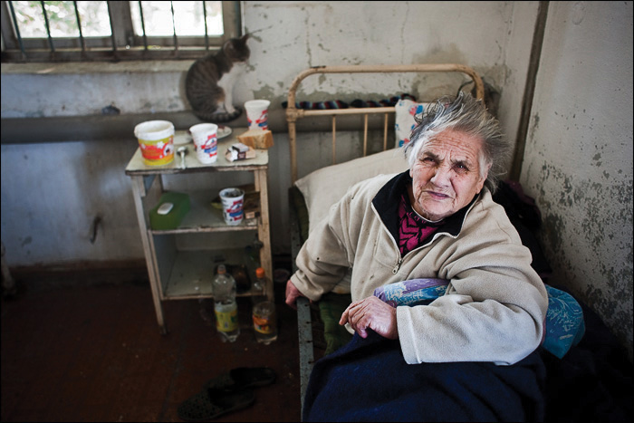
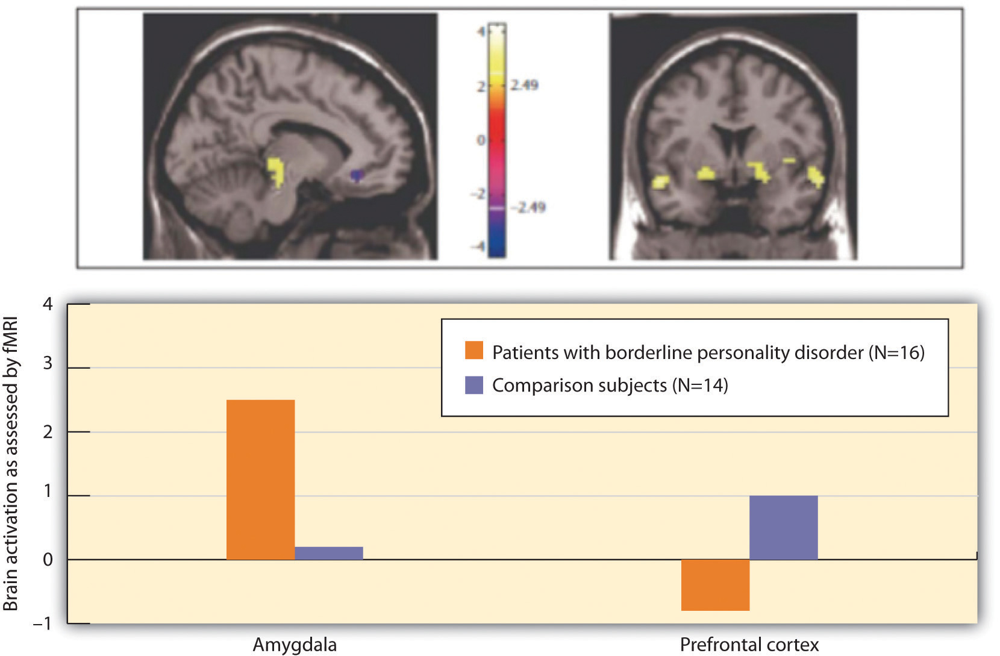

“I think we probably noticed in his early teens that he became very conscious about aspects of his appearance…he began to brood over it quite a lot,” said Maria as she called in to the talk radio program to describe her son Robert.
Maria described how Robert had begun to worry about his weight. A friend had commented that he had a “fat” stomach, and Robert began to cut down on eating. Then he began to worry that he wasn’t growing enough and devised an elaborate series of stretching techniques to help him get taller.
Robert scrutinized his face and body in the mirror for hours, finding a variety of imagined defects. He believed that his nose was crooked, and he was particularly concerned about a lump that he saw on it: “A small lump,” said his mother. “I should say it wasn’t very significant, but it was significant to him.”
Robert insisted that all his misery stemmed from this lump on his nose, that everybody noticed it. In his sophomore year of high school, he had cosmetic surgery to remove it.
Around this time, Robert had his first panic attack and began to worry that everybody could notice him sweating and blushing in public. He asked his parents for a $10,000 loan, which he said was for overseas study. He used the money for a procedure designed to reduce sweating and blushing. Then, dissatisfied with the results, he had the procedure reversed.
Robert was diagnosed with body dysmorphic disorder. His mother told the radio host,
At the time we were really happy because we thought that finally we actually knew what we were trying to fight and to be quite honest, I must admit I thought well it sounds pretty trivial.…
…Things seemed to go quite well and he got a new girlfriend and he was getting excellent marks in his clinical work in hospital and he promised us that he wasn't going to have any more surgery.
However, a lighthearted comment from a friend about a noticeable vein in his forehead prompted a relapse. Robert had surgery to tie off the vein. When that didn’t solve all his problems as he had hoped, he attempted to have the procedure reversed but learned that it would require complicated microsurgery. He then used injections on himself to try opening the vein again, but he could never completely reverse the first surgery.
Robert committed suicide shortly afterward, in 2001 (Mitchell, 2002).Mitchell, N. (Producer). (2002, April 28). Body dysmorphic disorder and cosmetic “surgery of the psyche.” All in the mind. ABC Radio National. Retrieved from http://www.abc.net.au/rn/allinthemind/stories/2003/746058.htm
The focus of the next two chapters is to many people the heart of psychology. This emphasis on abnormal psychologyThe application of psychological science to understanding and treating mental disorders.—the application of psychological science to understanding and treating mental disorders—is appropriate, as more psychologists are involved in the diagnosis and treatment of psychological disorder than in any other endeavor, and these are probably the most important tasks psychologists face. About 1 in every 4 Americans (or over 78 million people) are affected by a psychological disorder during any one year (Kessler, Chiu, Demler, & Walters, 2005),Kessler, R. C., Chiu, W. T., Demler, O., & Walters, E. E. (2005). Prevalence, severity, and comorbidity of 12-month DSM-IV disorders in the National Comorbidity Survey Replication. Archives of General Psychiatry, 62(6), 617–627. and at least a half billion people are affected worldwide. The impact of mental illness is particularly strong on people who are poorer, of lower socioeconomic class, and from disadvantaged ethnic groups.
People with psychological disorders are also stigmatized by the people around them, resulting in shame and embarrassment, as well as prejudice and discrimination against them. Thus the understanding and treatment of psychological disorder has broad implications for the everyday life of many people. Table 12.1 "One-Year Prevalence Rates for Psychological Disorders in the United States, 2001–2003" shows the prevalenceThe frequency of occurrence of a given condition in a population at a given time. (i.e., the frequency of occurrence of a given condition in a population at a given time) of some of the major psychological disorders in the United States.
Table 12.1 One-Year Prevalence Rates for Psychological Disorders in the United States, 2001–2003
| Disease | Percentage affected | Number affected |
|---|---|---|
| Any mental disorder | 26.2 | 81,744,000 |
| Any anxiety disorder | 18.1 | 56,472,000 |
| Specific phobia | 8.7 | 27,144,000 |
| Social phobia | 6.8 | 21,216,000 |
| Agoraphobia | 0.8 | 2,496,000 |
| Generalized anxiety disorder | 3.1 | 9,672,000 |
| Panic disorder | 2.7 | 8,424,000 |
| Obsessive-compulsive disorder | 1.0 | 3,120,000 |
| Posttraumatic stress disorder | 3.5 | 10,920,000 |
| Any mood disorder | 9.5 | 29,640,000 |
| Major depressive disorder | 6.7 | 20,904,000 |
| Bipolar disorder | 2.6 | 8,112,000 |
| Schizophrenia | 1.0 | 3,120,000 |
| Personality disorders | ||
| Antisocial personality disorder | 1.5 | 4,680,000 |
| Borderline personality disorder | 1.5 | 4,680,000 |
| Anorexia nervosa | 0.1 | 312,000 |
| Any substance abuse disorder | 3.8 | 11,856,000 |
| Alcohol use disorder | 4.4 | 13,728,000 |
| Drug use disorder | 1.8 | 5,616,000 |
| All cancers* | 5.4 | 16,848,000 |
| Diabetes* | 10.7 | 33,348,000 |
| * These nonpsychological conditions are included for comparison. | ||
Sources: Kessler, R. C., Chiu, W. T., Demler, O., & Walters, E. E. (2005). Prevalence, severity, and comorbidity of 12-month DSM-IV disorders in the National Comorbidity Survey Replication. Archives of General Psychiatry, 62(6), 617–627; Narrow, W. E., Rae, D. S., Robins, L. N., & Regier, D. A. (2002). Revised prevalence based estimates of mental disorders in the United States: Using a clinical significance criterion to reconcile 2 surveys’ estimates. Archives of General Psychiatry, 59(2), 115–123.
In this chapter our focus is on the disorders themselves. We will review the major psychological disorders and consider their causes and their impact on the people who suffer from them. Then in Chapter 13 "Treating Psychological Disorders", we will turn to consider the treatment of these disorders through psychotherapy and drug therapy.
A psychological disorderAn ongoing dysfunctional pattern of thought, emotion, and behavior that causes significant distress, and that is considered deviant in that person’s culture or society. is an ongoing dysfunctional pattern of thought, emotion, and behavior that causes significant distress, and that is considered deviant in that person’s culture or society (Butcher, Mineka, & Hooley, 2007).Butcher, J., Mineka, S., & Hooley, J. (2007). Abnormal psychology and modern life (13th ed.). Boston, MA: Allyn & Bacon. Psychological disorders have much in common with other medical disorders. They are out of the patient’s control, they may in some cases be treated by drugs, and their treatment is often covered by medical insurance. Like medical problems, psychological disorders have both biological (nature) as well as environmental (nurture) influences. These causal influences are reflected in the bio-psycho-social model of illness (Engel, 1977).Engel, G. (1977). The need for a new medical model: A challenge for biomedicine. Science, 196(4286), 129. doi:10.1126/science.847460
The bio-psycho-social model of illnessA way of understanding disorder that assumes that disorder is caused by biological, psychological, and social factors. is a way of understanding disorder that assumes that disorder is caused by biological, psychological, and social factors (Figure 12.1 "The Bio-Psycho-Social Model"). The biological component of the bio-psycho-social model refers to the influences on disorder that come from the functioning of the individual’s body. Particularly important are genetic characteristics that make some people more vulnerable to a disorder than others and the influence of neurotransmitters. The psychological component of the bio-psycho-social model refers to the influences that come from the individual, such as patterns of negative thinking and stress responses. The social component of the bio-psycho-social model refers to the influences on disorder due to social and cultural factors such as socioeconomic status, homelessness, abuse, and discrimination.
Figure 12.1 The Bio-Psycho-Social Model

The bio-psycho-social model of disorder proposes that disorders are caused by biological, psychological, and social-cultural factors.
To consider one example, the psychological disorder of schizophrenia has a biological cause because it is known that there are patterns of genes that make a person vulnerable to the disorder (Gejman, Sanders, & Duan, 2010).Gejman, P., Sanders, A., & Duan, J. (2010). The role of genetics in the etiology of schizophrenia. Psychiatric Clinics of North America, 33(1), 35–66. doi:10.1016/j.psc.2009.12.003 But whether or not the person with a biological vulnerability experiences the disorder depends in large part on psychological factors such as how the individual responds to the stress he experiences, as well as social factors such as whether or not he is exposed to stressful environments in adolescence and whether or not he has support from people who care about him (Sawa & Snyder, 2002; Walker, Kestler, Bollini, & Hochman, 2004).Sawa, A., & Snyder, S. (2002). Schizophrenia: Diverse approaches to a complex disease. Science, 296(5568), 692–695. doi:10.1126/science.1070532; Walker, E., Kestler, L., Bollini, A., & Hochman, K. (2004). Schizophrenia: Etiology and course. Annual Review of Psychology, 55, 401–430. doi:10.1146/annurev.psych.55.090902.141950 Similarly, mood and anxiety disorders are caused in part by genetic factors such as hormones and neurotransmitters, in part by the individual’s particular thought patterns, and in part by the ways that other people in the social environment treat the person with the disorder. We will use the bio-psycho-social model as a framework for considering the causes and treatments of disorder.
Although they share many characteristics with them, psychological disorders are nevertheless different from medical conditions in important ways. For one, diagnosis of psychological disorders can be more difficult. Although a medical doctor can see cancer in the lungs using an MRI scan or see blocked arteries in the heart using cardiac catheterization, there is no corresponding test for psychological disorder. Current research is beginning to provide more evidence about the role of brain structures in psychological disorder, but for now the brains of people with severe mental disturbances often look identical to those of people without such disturbances.
Because there are no clear biological diagnoses, psychological disorders are instead diagnosed on the basis of clinical observations of the behaviors that the individual engages in. These observations find that emotional states and behaviors operate on a continuum, ranging from more “normal” and “accepted” to more “deviant,” “abnormal,” and “unaccepted.” The behaviors that are associated with disorder are in many cases the same behaviors we that engage in our “normal” everyday life. Washing one’s hands is a normal healthy activity, but it can be overdone by those with an obsessive-compulsive disorder (OCD). It is not unusual to worry about and try to improve one’s body image, but Robert’s struggle with his personal appearance, as discussed at the beginning of this chapter, was clearly unusual, unhealthy, and distressing to him.
Whether a given behavior is considered a psychological disorder is determined not only by whether a behavior is unusual (e.g., whether it is “mild” anxiety versus “extreme” anxiety) but also by whether a behavior is maladaptive—that is, the extent to which it causes distress (e.g., pain and suffering) and dysfunction (impairment in one or more important areas of functioning) to the individual (American Psychiatric Association, 2000).American Psychiatric Association. (2000). Diagnostic and statistical manual of mental disorders (4th ed., text rev.). Washington, DC: Author. An intense fear of spiders, for example, would not be considered a psychological disorder unless it has a significant negative impact on the sufferer’s life, for instance by causing him or her to be unable to step outside the house. The focus on distress and dysfunction means that behaviors that are simply unusual (such as some political, religious, or sexual practices) are not classified as disorders.
Put your psychology hat on for a moment and consider the behaviors of the people listed in Table 12.2 "Diagnosing Disorder". For each, indicate whether you think the behavior is or is not a psychological disorder. If you’re not sure, what other information would you need to know to be more certain of your diagnosis?
Table 12.2 Diagnosing Disorder
| Yes | No | Need more information | Description |
|---|---|---|---|
| Jackie frequently talks to herself while she is working out her math homework. Her roommate sometimes hears her and wonders if she is OK. | |||
| Charlie believes that the noises made by cars and planes going by outside his house have secret meanings. He is convinced that he was involved in the start of a nuclear war and that the only way for him to survive is to find the answer to a difficult riddle. | |||
| Harriet gets very depressed during the winter months when the light is low. She sometimes stays in her pajamas for the whole weekend, eating chocolate and watching TV. | |||
| Frank seems to be afraid of a lot of things. He worries about driving on the highway and about severe weather that may come through his neighborhood. But mostly he fears mice, checking under his bed frequently to see if any are present. | |||
| A worshipper speaking in “tongues” at an Evangelical church views himself as “filled” with the Holy Spirit and is considered blessed with the gift to speak the “language of angels.” |
A trained clinical psychologist would have checked off “need more information” for each of the examples in Table 12.2 "Diagnosing Disorder" because although the behaviors may seem unusual, there is no clear evidence that they are distressing or dysfunctional for the person. Talking to ourselves out loud is unusual and can be a symptom of schizophrenia, but just because we do it once in a while does not mean that there is anything wrong with us. It is natural to be depressed, particularly in the long winter nights, but how severe should this depression be, and how long should it last? If the negative feelings last for an extended time and begin to lead the person to miss work or classes, then they may become symptoms of a mood disorder. It is normal to worry about things, but when does worry turn into a debilitating anxiety disorder? And what about thoughts that seem to be irrational, such as being able to “speak the language of angels”? Are they indicators of a severe psychological disorder, or part of a normal religious experience? Again, the answer lies in the extent to which they are (or are not) interfering with the individual’s functioning in society.
Another difficulty in diagnosing psychological disorders is that they frequently occur together. For instance, people diagnosed with anxiety disorders also often have mood disorders (Hunt, Slade, & Andrews, 2004),Hunt, C., Slade, T., & Andrews, G. (2004). Generalized anxiety disorder and major depressive disorder comorbidity in the National Survey of Mental Health and Well Being. Depression and Anxiety, 20, 23–31. and people diagnosed with one personality disorder frequently suffer from other personality disorders as well. ComorbidityA situation that occurs when people who suffer from one disorder also suffer at the same time from one or more other disorders. occurs when people who suffer from one disorder also suffer at the same time from other disorders. Because many psychological disorders are comorbid, most severe mental disorders are concentrated in a small group of people (about 6% of the population) who have more than three of them (Kessler, Chiu, Demler, & Walters, 2005).Kessler, R. C., Chiu, W. T., Demler, O., & Walters, E. E. (2005). Prevalence, severity, and comorbidity of 12-month DSM-IV disorders in the National Comorbidity Survey Replication. Archives of General Psychiatry, 62(6), 617–627.
Every culture and society has its own views on what constitutes abnormal behavior and what causes it (Brothwell, 1981).Brothwell, D. (1981). Digging up bones: The excavation, treatment, and study of human skeletal remains. Ithaca, NY: Cornell University Press. The Old Testament Book of Samuel tells us that as a consequence of his sins, God sent King Saul an evil spirit to torment him (1 Samuel 16:14). Ancient Hindu tradition attributed psychological disorder to sorcery and witchcraft. During the Middle Ages it was believed that mental illness occurred when the body was infected by evil spirits, particularly the devil. Remedies included whipping, bloodletting, purges, and trepanation (cutting a hole in the skull) to release the demons.
Figure 12.3

Trepanation (drilling holes in the skull) has been used since prehistoric times in attempts to cure epilepsy, schizophrenia, and other psychological disorders.
Source: Courtesy of Peter Treveris, http://commons.wikimedia.org/wiki/File:Peter_Treveris_-_ engraving_of_Trepanation_for_Handywarke_of_surgeri_1525.png.
Until the 18th century, the most common treatment for the mentally ill was to incarcerate them in asylums or “madhouses.” During the 18th century, however, some reformers began to oppose this brutal treatment of the mentally ill, arguing that mental illness was a medical problem that had nothing to do with evil spirits or demons. In France, one of the key reformers was Philippe Pinel (1745–1826), who believed that mental illness was caused by a combination of physical and psychological stressors, exacerbated by inhumane conditions. Pinel advocated the introduction of exercise, fresh air, and daylight for the inmates, as well as treating them gently and talking with them. In America, the reformers Benjamin Rush (1745–1813) and Dorothea Dix (1802–1887) were instrumental in creating mental hospitals that treated patients humanely and attempted to cure them if possible. These reformers saw mental illness as an underlying psychological disorder, which was diagnosed according to its symptoms and which could be cured through treatment.
Figure 12.4

Until the early 1900s people with mental disorders were often imprisoned in asylums such as these.
Source: Photo courtesy of the U.S. Library of Congress, http://commons.wikimedia.org/wiki/File:Sheriff_Hill_Lunatic_Asylum.jpg.
Figure 12.5

The reformers Philippe Pinel, Benjamin Rush, and Dorothea Dix fought the often brutal treatment of the mentally ill and were instrumental in changing perceptions and treatment of them.
Sources: Pinel portrait courtesy of Anna Mérimée, http://commons.wikimedia.org/wiki/File:Philippe_Pinel_%281745_-_1826%29.jpg. Rush portrait courtesy of Charles Wilson Peale, http://commons.wikimedia.org/wiki/File:Benjamin_Rush_Painting_by_Peale.jpg. Dix portrait courtesy of the U.S. Library of Congress, http://commons.wikimedia.org/wiki/File:Dix-Dorothea-LOC.jpg.
Despite the progress made since the 1800s in public attitudes about those who suffer from psychological disorders, people, including police, coworkers, and even friends and family members, still stigmatize people with psychological disorders. A stigmaA disgrace or defect that indicates that person belongs to a culturally devalued social group. refers to a disgrace or defect that indicates that person belongs to a culturally devalued social group. In some cases the stigma of mental illness is accompanied by the use of disrespectful and dehumanizing labels, including names such as “crazy,” “nuts,” “mental,” “schizo,” and “retard.”
The stigma of mental disorder affects people while they are ill, while they are healing, and even after they have healed (Schefer, 2003).Schefer, R. (2003, May 28). Addressing stigma: Increasing public understanding of mental illness. Presented to the Standing Senate Committee on Social Affairs, Science and Technology. Retrieved from http://www.camh.net/education/Resources_communities_organizations/addressing_stigma_senatepres03.pdf On a community level, stigma can affect the kinds of services social service agencies give to people with mental illness, and the treatment provided to them and their families by schools, workplaces, places of worship, and health-care providers. Stigma about mental illness also leads to employment discrimination, despite the fact that with appropriate support, even people with severe psychological disorders are able to hold a job (Boardman, Grove, Perkins, & Shepherd, 2003; Leff & Warner, 2006; Ozawa & Yaeda, 2007; Pulido, Diaz, & Ramirez, 2004).Boardman, J., Grove, B., Perkins, R., & Shepherd, G. (2003). Work and employment for people with psychiatric disabilities. British Journal of Psychiatry, 182(6), 467–468. doi:10.1192/bjp.182.6.467; Leff, J., & Warner, R. (2006). Social inclusion of people with mental illness. New York, NY: Cambridge University Press; Ozawa, A., & Yaeda, J. (2007). Employer attitudes toward employing persons with psychiatric disability in Japan. Journal of Vocational Rehabilitation, 26(2), 105–113; Pulido, F., Diaz, M., & Ramírez, M. (2004). Work integration of people with severe mental disorder: A pending question. Revista Psiquis, 25(6), 26–43.
The mass media has a significant influence on society’s attitude toward mental illness (Francis, Pirkis, Dunt, & Blood, 2001).Francis, C., Pirkis, J., Dunt, D., & Blood, R. (2001). Mental health and illness in the media: A review of the literature. Canberra, Australia: Commonwealth Department of Health & Aged Care. While media portrayal of mental illness is often sympathetic, negative stereotypes still remain in newspapers, magazines, film, and television. (See the following video for an example.)
Television advertisements may perpetuate negative stereotypes about the mentally ill. Burger King recently ran an ad called “The King’s Gone Crazy,” in which the company’s mascot runs around an office complex carrying out acts of violence and wreaking havoc.
The most significant problem of the stigmatization of those with psychological disorder is that it slows their recovery. People with mental problems internalize societal attitudes about mental illness, often becoming so embarrassed or ashamed that they conceal their difficulties and fail to seek treatment. Stigma leads to lowered self-esteem, increased isolation, and hopelessness, and it may negatively influence the individual’s family and professional life (Hayward & Bright, 1997).Hayward, P., & Bright, J. (1997). Stigma and mental illness: A review and critique. Journal of Mental Health, 6(4), 345–354.
Despite all of these challenges, however, many people overcome psychological disorders and go on to lead productive lives. It is up to all of us who are informed about the causes of psychological disorder and the impact of these conditions on people to understand, first, that mental illness is not a “fault” any more than is cancer. People do not choose to have a mental illness. Second, we must all work to help overcome the stigma associated with disorder. Organizations such as the National Alliance on Mental Illness (NAMI; n.d.),National Alliance on Mental Illness. (n.d.). Fight stigma. Retrieved from http://www.nami.org/template.cfm?section=fight_stigma for example, work to reduce the negative impact of stigma through education, community action, individual support, and other techniques.
Psychologists have developed criteria that help them determine whether behavior should be considered a psychological disorder and which of the many disorders particular behaviors indicate. These criteria are laid out in a 1,000-page manual known as the Diagnostic and Statistical Manual of Mental Disorders (DSM)A document that provides a common language and standard criteria for the classification of mental disorders., a document that provides a common language and standard criteria for the classification of mental disorders (American Psychiatric Association, 2000).American Psychiatric Association. (2000). Diagnostic and statistical manual of mental disorders (4th ed., text rev.). Washington, DC: Author. The DSM is used by therapists, researchers, drug companies, health insurance companies, and policymakers in the United States to determine what services are appropriately provided for treating patients with given symptoms.
Figure 12.6
The Diagnostic and Statistical Manual of Mental Disorders (DSM) is used to classify psychological disorders in the United States.
The first edition of the DSM was published in 1952 on the basis of census data and psychiatric hospital statistics. Since then, the DSM has been revised five times. The last major revision was the fourth edition (DSM-IV), published in 1994, and an update of that document was produced in 2000 (DSM-IV-TR). The fifth edition (DSM-V) is currently undergoing review, planning, and preparation and is scheduled to be published in 2013. The DSM-IV-TR was designed in conjunction with the World Health Organization’s 10th version of the International Classification of Diseases (ICD-10), which is used as a guide for mental disorders in Europe and other parts of the world.
As you can see in Figure 12.7, the DSM organizes the diagnosis of disorder according to five dimensions (or axes) relating to different aspects of disorder or disability. The axes are important to remember when we think about psychological disorder, because they make it clear not only that there are different types of disorder, but that those disorders have a variety of different causes. Axis I includes the most usual clinical disorders, including mood disorders and anxiety disorders; Axis II includes the less severe but long-lasting personality disorders as well as mental retardation; Axis III and Axis IV relate to physical symptoms and social-cultural factors, respectively. The axes remind us that when making a diagnosis we must look at the complete picture, including biological, personal, and social-cultural factors.
Figure 12.7

The DSM organizes psychological disorders into five dimensions (known as axes) that concern the different aspects of disorder.
Source: Adapted from American Psychiatric Association. (2000). Diagnostic and statistical manual of mental disorders (4th ed., text rev.). Washington, DC: Author.
The DSM does not attempt to specify the exact symptoms that are required for a diagnosis. Rather, the DSM uses categories, and patients whose symptoms are similar to the description of the category are said to have that disorder. The DSM frequently uses qualifiers to indicate different levels of severity within a category. For instance, the disorder of mental retardation can be classified as mild, moderate, or severe.
Each revision of the DSM takes into consideration new knowledge as well as changes in cultural norms about disorder. Homosexuality, for example, was listed as a mental disorder in the DSM until 1973, when it was removed in response to advocacy by politically active gay rights groups and changing social norms. The current version of the DSM lists about 400 disorders. Some of the major categories are shown in Table 12.3 "Categories of Psychological Disorders Based on the ", and you may go to http://en.wikipedia.org/wiki/DSM-IV_Codes_(alphabetical) and browse the complete list.
Table 12.3 Categories of Psychological Disorders Based on the DSM
| Category and description | Examples |
|---|---|
| Disorders diagnosed in infancy and childhood | Mental retardation |
| Communication, conduct, elimination, feeding, learning, and motor skills disorders | |
| Autism spectrum disorders | |
| Attention-deficit and disruptive behavior disorders including attention-deficit/hyperactivity disorder (ADHD) | |
| Separation anxiety disorder | |
| Delirium, dementia, and amnesia (forgetting or memory distortions caused by physical factors) | Delirium |
| Dementia and Alzheimer disease | |
| Dissociative disorders (forgetting or memory distortions that do not involve physical factors) | Dissociative amnesia |
| Dissociative fugue | |
| Dissociative identity disorder (“multiple personality”) | |
| Substance abuse disorders | Alcohol abuse |
| Drug abuse | |
| Caffeine abuse | |
| Schizophrenia and other psychotic disorders | |
| Mood disorders | Mood disorder |
| Major depressive disorder | |
| Bipolar disorder | |
| Anxiety disorders | Generalized anxiety disorder |
| Panic disorder | |
| Specific phobia including agoraphobia | |
| Obsessive-compulsive disorder (OCD) | |
| Posttraumatic stress disorder (PTSD) | |
| Somatoform disorders (physical symptoms that do not have a clear physical cause and thus must be psychological in origin) | Conversion disorder |
| Pain disorder | |
| Hypochondriasis | |
| Body dysmorphic disorder (BDD) | |
| Factitious disorders (conditions in which a person acts as if he or she has an illness by deliberately producing, feigning, or exaggerating symptoms) | |
| Sexual disorders | Sexual dysfunctions including erectile and orgasmic disorders |
| Paraphilias | |
| Gender identity disorders | |
| Sexual abuse | |
| Eating disorders | Anorexia nervosa |
| Bulimia nervosa | |
| Sleep disorders | Narcolepsy |
| Sleep apnea | |
| Impulse-control disorders | Kleptomania (stealing) |
| Pyromania (fire lighting) | |
| Pathological gambling (addiction) | |
| Personality disorders | |
| Cluster A (odd or eccentric behaviors) | Paranoid personality disorder |
| Schizoid personality disorder | |
| Schizotypal personality disorder | |
| Cluster B (dramatic, emotional, or erratic behaviors) | Antisocial personality disorder |
| Borderline personality disorder | |
| Histrionic personality disorder | |
| Narcissistic personality disorder | |
| Cluster C (anxious or fearful behaviors) | Avoidant personality disorder |
| Dependent personality disorder | |
| Obsessive-compulsive personality disorder | |
| Other disorders | Includes academic problems, antisocial behavior, bereavement, child neglect, occupational problems, relational problems, physical abuse, and malingering |
Although the DSM has been criticized regarding the nature of its categorization system (and it is frequently revised to attempt to address these criticisms), for the fact that it tends to classify more behaviors as disorders with every revision (even “academic problems” are now listed as a potential psychological disorder), and for the fact that it is primarily focused on Western illness, it is nevertheless a comprehensive, practical, and necessary tool that provides a common language to describe disorder. Most U.S. insurance companies will not pay for therapy unless the patient has a DSM diagnosis. The DSM approach allows a systematic assessment of the patient, taking into account the mental disorder in question, the patient’s medical condition, psychological and cultural factors, and the way the patient functions in everyday life.
Two common critiques of the DSM are that the categorization system leaves quite a bit of ambiguity in diagnosis and that it covers such a wide variety of behaviors. Let’s take a closer look at three common disorders—attention-deficit/hyperactivity disorder (ADHD), autistic disorder, and Asperger’s disorder—that have recently raised controversy because they are being diagnosed significantly more frequently than they were in the past.
Zack, aged 7 years, has always had trouble settling down. He is easily bored and distracted. In school, he cannot stay in his seat for very long and he frequently does not follow instructions. He is constantly fidgeting or staring into space. Zack has poor social skills and may overreact when someone accidentally bumps into him or uses one of his toys. At home, he chatters constantly and rarely settles down to do a quiet activity, such as reading a book.
Symptoms such as Zack’s are common among 7-year-olds, and particularly among boys. But what do the symptoms mean? Does Zack simply have a lot of energy and a short attention span? Boys mature more slowly than girls at this age, and perhaps Zack will catch up in the next few years. One possibility is for the parents and teachers to work with Zack to help him be more attentive, to put up with the behavior, and to wait it out.
But many parents, often on the advice of the child’s teacher, take their children to a psychologist for diagnosis. If Zack were taken for testing today, it is very likely that he would be diagnosed with a psychological disorder known as attention-deficit/hyperactivity disorder (ADHD)A developmental behavior disorder characterized by problems with focus, difficulty maintaining attention, and inability to concentrate, in which symptoms start before 7 years of age.. ADHD is a developmental behavior disorder characterized by problems with focus, difficulty maintaining attention, and inability to concentrate, in which symptoms start before 7 years of age (American Psychiatric Association, 2000; National Institute of Mental Health, 2010).American Psychiatric Association. (2000). Diagnostic and statistical manual of mental disorders (4th ed., text rev.). Washington, DC: Author; National Institute of Mental Health. (2010). Attention-deficit hyperactivity disorder (ADHD). Retrieved from http://www.nimh.nih.gov/health/topics/attention-deficit-hyperactivity-disorder-adhd/index.shtml Although it is usually first diagnosed in childhood, ADHD can remain problematic in adults, and up to 7% of college students are diagnosed with it (Weyandt & DuPaul, 2006).Weyandt, L. L., & DuPaul, G. (2006). ADHD in college students. Journal of Attention Disorders, 10(1), 9–19. In adults the symptoms of ADHD include forgetfulness, difficulty paying attention to details, procrastination, disorganized work habits, and not listening to others. ADHD is about 70% more likely to occur in males than in females (Kessler, Chiu, Demler, & Walters, 2005),Kessler, R. C., Chiu, W. T., Demler, O., & Walters, E. E. (2005). Prevalence, severity, and comorbidity of 12-month DSM-IV disorders in the National Comorbidity Survey Replication. Archives of General Psychiatry, 62(6), 617–627. and is often comorbid with other behavioral and conduct disorders.
The diagnosis of ADHD has quadrupled over the past 20 years such that it is now diagnosed in about 1 out of every 20 American children and is the most common psychological disorder among children in the world (Olfson, Gameroff, Marcus, & Jensen, 2003).Olfson, M., Gameroff, M., Marcus, S., & Jensen, P. (2003). National trends in the treatment of attention deficit hyperactivity disorder. American Journal of Psychiatry, 160, 1071–1077. ADHD is also being diagnosed much more frequently in adolescents and adults (Barkley, 1998).Barkley, R. A. (1998). Attention-deficit hyperactivity disorder: A handbook for diagnosis and treatment (2nd ed.). New York, NY: Guilford Press. You might wonder what this all means. Are the increases in the diagnosis of ADHD due to the fact that today’s children and adolescents are actually more distracted and hyperactive than their parents were, due to a greater awareness of ADHD among teachers and parents, or due to psychologists and psychiatrists’ tendency to overdiagnose the problem? Perhaps drug companies are also involved, because ADHD is often treated with prescription medications, including stimulants such as Ritalin.
Although skeptics argue that ADHD is overdiagnosed and is a handy excuse for behavioral problems, most psychologists believe that ADHD is a real disorder that is caused by a combination of genetic and environmental factors. Twin studies have found that ADHD is heritable (National Institute of Mental Health, 2008),National Institute of Mental Health. (2010). Attention-deficit hyperactivity disorder (ADHD). Retrieved from http://www.nimh.nih.gov/health/topics/attention-deficit-hyperactivity-disorder-adhd/index.shtml and neuroimaging studies have found that people with ADHD may have structural differences in areas of the brain that influence self-control and attention (Seidman, Valera, & Makris, 2005).Seidman, L., Valera, E., & Makris, N. (2005). Structural brain imaging of attention deficit/hyperactivity disorder. Biological Psychiatry, 57, 1263–1272. Other studies have also pointed to environmental factors, such as mothers’ smoking and drinking alcohol during pregnancy and the consumption of lead and food additives by those who are affected (Braun, Kahn, Froehlich, Auinger, & Lanphear, 2006; Linnet et al., 2003; McCann et al., 2007).Braun, J., Kahn, R., Froehlich, T., Auinger, P., & Lanphear, B. (2006). Exposures to environmental toxicants and attention-deficit/hyperactivity disorder in U.S. children. Environmental Health Perspectives, 114(12), 1904–1909; Linnet K., Dalsgaard, S., Obel, C., Wisborg, K., Henriksen T., Rodriguez, A.,…Jarvelin, M. (2003). Maternal lifestyle factors in pregnancy risk of attention-deficit/hyperactivity disorder and associated behaviors: Review of the current evidence. American Journal of Psychiatry, 160(6), 1028–1040; McCann, D., Barrett, A., Cooper, A., Crumpler, D., Dalen, L., Grimshaw, K.,…Stevenson, J. (2007). Food additives and hyperactive behaviour in 3-year-old and 8/9-year-old children in the community: A randomised, double-blinded, placebo-controlled trial. Lancet, 370(9598), 1560–1567. Social factors, such as family stress and poverty, also contribute to ADHD (Burt, Krueger, McGue, & Iacono, 2001).Burt, S. A., Krueger, R. F., McGue, M., & Iacono, W. G. (2001). Sources of covariation among attention-deficit/hyperactivity disorder, oppositional defiant disorder, and conduct disorder: The importance of shared environment. Journal of Abnormal Psychology, 110(4), 516–525.
Jared’s kindergarten teacher has voiced her concern to Jared’s parents about his difficulties with interacting with other children and his delay in developing normal language. Jared is able to maintain eye contact and enjoys mixing with other children, but he cannot communicate with them very well. He often responds to questions or comments with long-winded speeches about trucks or some other topic that interests him, and he seems to lack awareness of other children’s wishes and needs.
Jared’s concerned parents took him to a multidisciplinary child development center for consultation. Here he was tested by a pediatric neurologist, a psychologist, and a child psychiatrist.
The pediatric neurologist found that Jared’s hearing was normal, and there were no signs of any neurological disorder. He diagnosed Jared with a pervasive developmental disorder, because while his comprehension and expressive language was poor, he was still able to carry out nonverbal tasks, such as drawing a picture or doing a puzzle.
Based on her observation of Jared’s difficulty interacting with his peers, and the fact that he did not respond warmly to his parents, the psychologist diagnosed Jared with autistic disorder (autism)A disorder of neural development characterized by impaired social interaction and communication and by restricted and repetitive behavior and in which symptoms begin before 7 years of age., a disorder of neural development characterized by impaired social interaction and communication and by restricted and repetitive behavior, and in which symptoms begin before 7 years of age. The psychologist believed that the autism diagnosis was correct because, like other children with autism, Jared, has a poorly developed ability to see the world from the perspective of others; engages in unusual behaviors such as talking about trucks for hours; and responds to stimuli, such as the sound of a car or an airplane, in unusual ways.
The child psychiatrist believed that Jared’s language problems and social skills were not severe enough to warrant a diagnosis of autistic disorder and instead proposed a diagnosis of Asperger’s disorderA developmental disorder that affects a child’s ability to socialize and communicate effectively with others and in which symptoms begin before 7 years of age., a developmental disorder that affects a child’s ability to socialize and communicate effectively with others and in which symptoms begin before 7 years of age. The symptoms of Asperger’s are almost identical to that of autism (with the exception of a delay in language development), and the child psychiatrist simply saw these problems as less extreme.
Imagine how Jared’s parents must have felt at this point. Clearly there is something wrong with their child, but even the experts cannot agree on exactly what the problem is. Diagnosing problems such as Jared’s is difficult, yet the number of children like him is increasing dramatically. Disorders related to autism and Asperger’s disorder now affect almost 1% of American children (Kogan et al., 2007).Kogan, M., Blumberg, S., Schieve, L., Boyle, C., Perrin, J., Ghandour, R.,…van Dyck, P. (2009). Prevalence of parent-reported diagnosis of autism spectrum disorder among children in the US, 2007. Pediatrics, 124(5), 1395–1403. doi:10.1542/peds.2009-1522 The milder forms of autism, and particularly Asperger’s, have accounted for most of this increase in diagnosis.
Although for many years autism was thought to be primarily a socially determined disorder, in which parents who were cold, distant, and rejecting created the problem, current research suggests that biological factors are most important. The heritability of autism has been estimated to be as high as 90% (Freitag, 2007).Freitag C. M. (2007). The genetics of autistic disorders and its clinical relevance: A review of the literature. Molecular Psychiatry, 12(1), 2–22. Scientists speculate that autism is caused by an unknown genetically determined brain abnormality that occurs early in development. It is likely that several different brain sites are affected (Moldin, 2003),Moldin, S. O. (2003). Editorial: Neurobiology of autism: The new frontier. Genes, Brain & Behavior, 2(5), 253–254. and the search for these areas is being conducted in many scientific laboratories.
But does Jared have autism or Asperger’s? The problem is that diagnosis is not exact (remember the idea of “categories”), and the experts themselves are often unsure how to classify behavior. Furthermore, the appropriate classifications change with time and new knowledge. The American Psychiatric Association has recently posted on its website a proposal to eliminate the term Asperger’s syndrome from the upcoming DSM-V. Whether or not Asperger’s will remain a separate disorder will be made known when the next DSM-V is published in 2013.
AnxietyThe nervousness or agitation that we sometimes experience, often about something that is going to happen., the nervousness or agitation that we sometimes experience, often about something that is going to happen, is a natural part of life. We all feel anxious at times, maybe when we think about our upcoming visit to the dentist or the presentation we have to give to our class next week. Anxiety is an important and useful human emotion; it is associated with the activation of the sympathetic nervous system and the physiological and behavioral responses that help protect us from danger. But too much anxiety can be debilitating, and every year millions of people suffer from anxiety disordersA psychological disturbance marked by irrational fears, often of everyday objects and situations., which are psychological disturbances marked by irrational fears, often of everyday objects and situations (Kessler, Chiu, Demler, & Walters, 2005).Kessler, R., Chiu, W., Demler, O., & Walters, E. (2005). Prevalence, severity, and comorbidity of 12-month DSM-IV disorders in the National Comorbidity Survey Replication. Archives of General Psychiatry, 62(6), 617–627.
Consider the following, in which “Chase” describes her feelings of a persistent and exaggerated sense of anxiety, even when there is little or nothing in her life to provoke it:
For a few months now I’ve had a really bad feeling inside of me. The best way to describe it is like a really bad feeling of negative inevitability, like something really bad is impending, but I don’t know what. It’s like I’m on trial for murder or I’m just waiting to be sent down for something. I have it all of the time but it gets worse in waves that come from nowhere with no apparent triggers. I used to get it before going out for nights out with friends, and it kinda stopped me from doing it as I’d rather not go out and stress about the feeling, but now I have it all the time so it doesn’t really make a difference anymore. (Chase, 2010)Chase. (2010, February 28). Re: “anxiety?” [Online forum comment]. Mental Health Forum. Retrieved from http://www.mentalhealthforum.net/forum/showthread.php?t=9359
Chase is probably suffering from a generalized anxiety disorder (GAD)A psychological disorder diagnosed in situations in which a person has been excessively worrying about money, health, work, family life, or relationships for at least 6 months, even though he or she knows that the concerns are exaggerated, and when the anxiety causes significant distress and dysfunction., a psychological disorder diagnosed in situations in which a person has been excessively worrying about money, health, work, family life, or relationships for at least 6 months, even though he or she knows that the concerns are exaggerated, and when the anxiety causes significant distress and dysfunction.
In addition to their feelings of anxiety, people who suffer from GAD may also experience a variety of physical symptoms, including irritability, sleep troubles, difficulty concentrating, muscle aches, trembling, perspiration, and hot flashes. The sufferer cannot deal with what is causing the anxiety, nor avoid it, because there is no clear cause for anxiety. In fact, the sufferer frequently knows, at least cognitively, that there is really nothing to worry about.
About 10 million Americans suffer from GAD, and about two thirds are women (Kessler, Chiu, Demler, & Walters, 2005; Robins & Regier, 1991).Kessler, R., Chiu, W., Demler, O., & Walters, E. (2005). Prevalence, severity, and comorbidity of 12-month DSM-IV disorders in the National Comorbidity Survey Replication. Archives of General Psychiatry, 62(6), 617–27; Robins, L., & Regier, D. A. (1991). Psychiatric disorders in America: The Epidemiologic Catchment Area Study. New York, NY: Free Press. Generalized anxiety disorder is most likely to develop between the ages of 7 and 40 years, but its influence may in some cases lessen with age (Rubio & Lopez-Ibor, 2007).Rubio, G., & Lopez-Ibor, J. (2007). Generalized anxiety disorder: A 40-year follow up study. Acta Psychiatric Scandinavica, 115, 372–379.
When I was about 30 I had my first panic attack. I was driving home, my three little girls were in their car seats in the back, and all of a sudden I couldn’t breathe, I broke out into a sweat, and my heart began racing and literally beating against my ribs! I thought I was going to die. I pulled off the road and put my head on the wheel. I remember songs playing on the CD for about 15 minutes and my kids’ voices singing along. I was sure I’d never see them again. And then, it passed. I slowly got back on the road and drove home. I had no idea what it was. (Ceejay, 2006)Ceejay. (2006, September). My dance with panic [Web log post]. Panic Survivor. Retrieved from http://www.panicsurvivor.com/index.php/2007102366/Survivor-Stories/My-Dance-With-Panic.html
Ceejay is experiencing panic disorderA psychological disorder characterized by sudden attacks of anxiety and terror that have led to significant behavioral changes in the person’s life., a psychological disorder characterized by sudden attacks of anxiety and terror that have led to significant behavioral changes in the person’s life. Symptoms of a panic attack include shortness of breath, heart palpitations, trembling, dizziness, choking sensations, nausea, and an intense feeling of dread or impending doom. Panic attacks can often be mistaken for heart attacks or other serious physical illnesses, and they may lead the person experiencing them to go to a hospital emergency room. Panic attacks may last as little as one or as much as 20 minutes, but they often peak and subside within about 10 minutes.
Sufferers are often anxious because they fear that they will have another attack. They focus their attention on the thoughts and images of their fears, becoming excessively sensitive to cues that signal the possibility of threat (MacLeod, Rutherford, Campbell, Ebsworthy, & Holker, 2002).MacLeod, C., Rutherford, E., Campbell, L., Ebsworthy, G., & Holker, L. (2002). Selective attention and emotional vulnerability: Assessing the causal basis of their association through the experimental manipulation of attentional bias. Journal of Abnormal Psychology, 111(1), 107–123. They may also become unsure of the source of their arousal, misattributing it to situations that are not actually the cause. As a result, they may begin to avoid places where attacks have occurred in the past, such as driving, using an elevator, or being in public places. Panic disorder affects about 3% of the American population in a given year.
A phobiaA specific fear of a certain object, situation, or activity. (from the Greek word phobos, which means “fear”) is a specific fear of a certain object, situation, or activity. The fear experience can range from a sense of unease to a full-blown panic attack. Most people learn to live with their phobias, but for others the fear can be so debilitating that they go to extremes to avoid the fearful situation. A sufferer of arachnophobia (fear of spiders), for example, may refuse to enter a room until it has been checked thoroughly for spiders, or may refuse to vacation in the countryside because spiders may be there. Phobias are characterized by their specificity and their irrationality. A person with acrophobia (a fear of height) could fearlessly sail around the world on a sailboat with no concerns yet refuse to go out onto the balcony on the fifth floor of a building.
A common phobia is social phobiaExtreme shyness around people or discomfort in social situations., extreme shyness around people or discomfort in social situations. Social phobia may be specific to a certain event, such as speaking in public or using a public restroom, or it can be a more generalized anxiety toward almost all people outside of close family and friends. People with social phobia will often experience physical symptoms in public, such as sweating profusely, blushing, stuttering, nausea, and dizziness. They are convinced that everybody around them notices these symptoms as they are occurring. Women are somewhat more likely than men to suffer from social phobia.
The most incapacitating phobia is agoraphobiaAnxiety about being in places or situations from which escape might be difficult or embarrassing or in which help may not be available., defined as anxiety about being in places or situations from which escape might be difficult or embarrassing, or in which help may not be available (American Psychiatric Association, 2000).American Psychiatric Association. (2000). Diagnostic and statistical manual of mental disorders (4th ed., text rev.). Washington, DC: Author. Typical places that provoke the panic attacks are parking lots; crowded streets or shops; and bridges, tunnels, or expressways. People (mostly women) who suffer from agoraphobia may have great difficulty leaving their homes and interacting with other people.
Phobias affect about 9% of American adults, and they are about twice as prevalent in women as in men (Fredrikson, Annas, Fischer, & Wik, 1996; Kessler, Meron-Ruscio, Shear, & Wittchen, 2009).Fredrikson, M., Annas, P., Fischer, H., & Wik, G. (1996). Gender and age differences in the prevalence of specific fears and phobias. Behaviour Research and Therapy, 34(1), 33–39. doi:10.1016/0005-7967(95)00048-3; Kessler, R., Meron-Ruscio, A., Shear, K., & Wittchen, H. (2009). Epidemiology of anxiety disorders. In M. Anthony, & M. Stein (Eds). Oxford handbook of anxiety and related disorders. New York, NY: Oxford University Press. In most cases phobias first appear in childhood and adolescence, and usually persist into adulthood. Table 12.4 "The Most Common Phobias" presents a list of the common phobias that are diagnosed by psychologists.
Table 12.4 The Most Common Phobias
| Name | Description |
|---|---|
| Acrophobia | Fear of heights |
| Agoraphobia | Fear of situations in which escape is difficult |
| Arachnophobia | Fear of spiders |
| Astraphobia | Fear of thunder and lightning |
| Claustrophobia | Fear of closed-in spaces |
| Cynophobia | Fear of dogs |
| Mysophobia | Fear of germs or dirt |
| Ophidiophobia | Fear of snakes |
| Pteromerhanophobia | Fear of flying |
| Social phobia | Fear of social situations |
| Trypanophobia | Fear of injections |
| Zoophobia | Fear of small animals |
Although he is best known his perfect shots on the field, the soccer star David Beckham also suffers from Obsessive-Compulsive Disorder (OCD). As he describes it,
I have got this obsessive-compulsive disorder where I have to have everything in a straight line or everything has to be in pairs. I’ll put my Pepsi cans in the fridge and if there’s one too many then I’ll put it in another cupboard somewhere. I’ve got that problem. I’ll go into a hotel room. Before I can relax, I have to move all the leaflets and all the books and put them in a drawer. Everything has to be perfect. (Dolan, 2006)Dolan, A. (2006, April 3). The obsessive disorder that haunts my life. Daily Mail. Retrieved from http://www.dailymail.co.uk/tvshowbiz/article-381802/The-obsessive-disorder-haunts-life.html
David Beckham’s experience with obsessive behavior is not unusual. We all get a little obsessive at times. We may continuously replay a favorite song in our heads, worry about getting the right outfit for an upcoming party, or find ourselves analyzing a series of numbers that seem to have a certain pattern. And our everyday compulsions can be useful. Going back inside the house once more to be sure that we really did turn off the sink faucet or checking the mirror a couple of times to be sure that our hair is combed are not necessarily bad ideas.
Figure 12.8

The soccer star David Beckham suffers from obsessive-compulsive disorder (OCD).
Source: Photo courtesy of Raj Patel, http://commons.wikimedia.org/wiki/File:Beckham_LA_Galaxy_cropped.jpg.
Obsessive-compulsive disorder (OCD)A psychological disorder that is diagnosed when an individual continuously experiences distressing or frightening thoughts, and engages in obsessions (repetitive thoughts) or compulsions (repetitive behaviors) in an attempt to calm these thoughts. is a psychological disorder that is diagnosed when an individual continuously experiences distressing or frightening thoughts, and engages in obsessions (repetitive thoughts) or compulsions (repetitive behaviors) in an attempt to calm these thoughts. OCD is diagnosed when the obsessive thoughts are so disturbing and the compulsive behaviors are so time consuming that they cause distress and significant dysfunction in a person’s everyday life. Washing your hands once or even twice to make sure that they are clean is normal; washing them 20 times is not. Keeping your fridge neat is a good idea; spending hours a day on it is not. The sufferers know that these rituals are senseless, but they cannot bring themselves to stop them, in part because the relief that they feel after they perform them acts as a reinforcer, making the behavior more likely to occur again.
Sufferers of OCD may avoid certain places that trigger the obsessive thoughts, or use alcohol or drugs to try to calm themselves down. OCD has a low prevalence rate (about 1% of the population in a given year) in relation to other anxiety disorders, and usually develops in adolescence or early adulthood (Horwath & Weissman, 2000; Samuels & Nestadt, 1997).Horwath, E., & Weissman, M. (2000). The epidemiology and cross-national presentation of obsessive-compulsive disorder. Psychiatric Clinics of North America, 23(3), 493–507. doi:10.1016/S0193-953X(05)70176-3; Samuels, J., & Nestadt, G. (1997). Epidemiology and genetics of obsessive-compulsive disorder. International Review of Psychiatry, 9, 61–71. The course of OCD varies from person to person. Symptoms can come and go, decrease, or worsen over time.
“If you imagine burnt pork and plastic; I can still taste it,” says Chris Duggan, on his experiences as a soldier in the Falklands War in 1982. “These helicopters were coming in and we were asked to help get the boys off…when they opened the doors the stench was horrendous.”
When he left the army in 1986, he suffered from PTSD. “I was a bit psycho,” he says. “I was verbally aggressive, very uncooperative. I was arguing with my wife, and eventually we divorced. I decided to change the kitchen around one day, get all new stuff, so I threw everything out of the window. I was 10 stories up in a flat. I poured brandy all over the video and it melted. I flooded the bathroom.” (Gould, 2007)Gould, M. (2007, October 10). You can teach a man to kill but not to see dying. The Guardian. Retrieved from http://www.guardian.co.uk/society/2007/oct/10/guardiansocietysupplement.socialcare2
People who have survived a terrible ordeal, such as combat, torture, sexual assault, imprisonment, abuse, natural disasters, or the death of someone close to them may develop posttraumatic stress disorder (PTSD). The anxiety may begin months or even years after the event. People with PTSD experience high levels of anxiety along with reexperiencing the trauma (flashbacks), and a strong desire to avoid any reminders of the event. They may lose interest in things they used to enjoy; startle easily; have difficulty feeling affection; and may experience terror, rage, depression, or insomnia. The symptoms may be felt especially when approaching the area where the event took place or when the anniversary of that event is near.
PTSD affects about 5 million Americans, including victims of the 9/11 terrorist attacks, the wars in Afghanistan and Iraq, and Hurricane Katrina. Sixteen percent of Iraq war veterans, for example, reported experiencing symptoms of PTSD (Hoge & Castro, 2006).Hoge, C., & Castro, C. (2006). Post traumatic stress disorder in UK and U.S. forces deployed to Iraq. Lancet, 368, 867. PTSD is a frequent outcome of childhood or adult sexual abuse, a disorder that has its own Diagnostic and Statistical Manual of Mental Disorders (DSM) diagnosis. Women are more likely to develop PTSD than men (Davidson, 2000).Davidson, J. (2000). Trauma: The impact of post-traumatic stress disorder. Journal of Psychopharmacology, 14(2 Suppl 1), S5–S12.
Risk factors for PTSD include the degree of the trauma’s severity, the lack of family and community support, and additional life stressors (Brewin, Andrews, & Valentine, 2000).Brewin, C., Andrews, B., & Valentine, J. (2000). Meta-analysis of risk factors for posttraumatic stress disorder in trauma-exposed adults. Journal of Consulting and Clinical Psychology, 68(5), 748–766. doi:10.1037//0022-006X.68.5.748 Many people with PTSD also suffer from another mental disorder, particularly depression, other anxiety disorders, and substance abuse (Brady, Back, & Coffey, 2004).Brady, K. T., Back, S. E., & Coffey, S. F. (2004). Substance abuse and posttraumatic stress disorder. Current Directions in Psychological Science, 13(5), 206–209.
On October 23, 2006, a man appeared on the television show Weekend Today and asked America to help him rediscover his identity. The man, who was later identified as Jeffrey Alan Ingram, had left his home in Seattle on September 9, 2006, and found himself in Denver a few days later, without being able to recall who he was or where he lived. He was reunited with family after being recognized on the show. According to a coworker of Ingram’s fiancée, even after Ingram was reunited with his fiancée, his memory did not fully return. “He said that while her face wasn’t familiar to him, her heart was familiar to him…He can’t remember his home, but he said their home felt like home to him.”
People who experience anxiety are haunted by their memories and experiences, and although they desperately wish to get past them, they normally cannot. In some cases, however, such as with Jeffrey Ingram, people who become overwhelmed by stress experience an altered state of consciousness in which they become detached from the reality of what is happening to them. A dissociative disorderA condition that involves disruptions or breakdowns of memory, awareness, and identity. is a condition that involves disruptions or breakdowns of memory, awareness, and identity. The dissociation is used as a defense against the trauma.
Dissociative amnesiaA psychological disorder that involves extensive, but selective, memory loss, but in which there is no physiological explanation for the forgetting. is a psychological disorder that involves extensive, but selective, memory loss, but in which there is no physiological explanation for the forgetting (van der Hart & Nijenhuis, 2009).van der Hart, O., & Nijenhuis, E. R. S. (2009). Dissociative disorders. In P. H. Blaney & T. M. Millon (Eds.), Oxford textbook of psychological disorder (2nd ed., pp. 452–481). New York, NY: Oxford University Press. The amnesia is normally brought on by a trauma—a situation that causes such painful anxiety that the individual “forgets” in order to escape. These kinds of trauma include disasters, accidents, physical abuse, rape, and other forms of severe stress (Cloninger & Dokucu, 2008).Cloninger, C., & Dokucu, M. (2008). Somatoform and dissociative disorders. In S. H. Fatemi & P. J. Clayton (Eds.), The medical basis of psychiatry (3rd ed., pp. 181–194). Totowa, NJ: Humana Press. doi:10.1007/978-1-59745-252-6_11 Although the personality of people who are experiencing dissociative amnesia remains fundamentally unchanged—and they recall how to carry out daily tasks such as reading, writing, and problem solving—they tend to forget things about their personal lives—for instance, their name, age, and occupation—and may fail to recognize family and friends (van der Hart & Nijenhuis, 2009).van der Hart, O., & Nijenhuis, E. R. S. (2009). Dissociative disorders. In P. H. Blaney & T. M. Millon (Eds.), Oxford textbook of psychological disorder (2nd ed., pp. 452–481). New York, NY: Oxford University Press.
A related disorder, dissociative fugueA psychological disorder in which an individual loses complete memory of his or her identity and may even assume a new one, often far from home., is a psychological disorder in which an individual loses complete memory of his or her identity and may even assume a new one, often far from home. The individual with dissociative fugue experiences all the symptoms of dissociative amnesia but also leaves the situation entirely. The fugue state may last for just a matter of hours or may continue for months, as it did with Jeffrey Ingram. Recovery from the fugue state tends to be rapid, but when people recover they commonly have no memory of the stressful event that triggered the fugue or of events that occurred during their fugue state (Cardeña & Gleaves, 2007).Cardeña, E., & Gleaves, D. (2007). Dissociative disorders. In M. M. Hersen, S. M. Turner, & D. C. Beidel (Eds.), Adult psychological disorder and diagnosis (5th ed., pp. 473–503). Hoboken, NJ: John Wiley & Sons.
You may remember the story of Sybil (a pseudonym for Shirley Ardell Mason, who was born in 1923), a person who, over a period of 40 years, claimed to possess 16 distinct personalities. Mason was in therapy for many years trying to integrate these personalities into one complete self. A TV movie about Mason’s life, starring Sally Field as Sybil, appeared in 1976.
Figure 12.9
Shirley Ardell Mason, also known as “Sybil,” suffered from dissociative identity disorder.
Source: Photo courtesy of http://en.wikipedia.org/wiki/File:Shirley_Ardell_Mason.jpg.
Sybil suffered from the most severe of the dissociative disorders, dissociative identity disorder. Dissociative identity disorderA psychological disorder in which two or more distinct and individual personalities exist in the same person, and there is memory disruption regarding personal information about the other personalities. is a psychological disorder in which two or more distinct and individual personalities exist in the same person, and there is an extreme memory disruption regarding personal information about the other personalities (van der Hart & Nijenhuis, 2009).van der Hart, O., & Nijenhuis, E. R. S. (2009). Dissociative disorders. In P. H. Blaney, & T. M. Millon (Eds.), Oxford textbook of psychological disorder (2nd ed., pp. 452–481). New York, NY: Oxford University Press. Dissociative identity disorder was once known as “multiple personality disorder,” and this label is still sometimes used. This disorder is sometimes mistakenly referred to as schizophrenia.
In some cases of dissociative identity disorder, there can be more than 10 different personalities in one individual. Switches from one personality to another tend to occur suddenly, often triggered by a stressful situation (Gillig, 2009).Gillig, P. M. (2009). Dissociative identity disorder: A controversial diagnosis. Psychiatry, 6(3), 24–29. The host personality is the personality in control of the body most of the time, and the alter personalities tend to differ from each other in terms of age, race, gender, language, manners, and even sexual orientation (Kluft, 1996).Kluft, R. P. (1996). The diagnosis and treatment of dissociative identity disorder. In The Hatherleigh guide to psychiatric disorders (1st ed., Vol. 1, pp. 49–96). New York, NY: Hatherleigh Press. A shy, introverted individual may develop a boisterous, extroverted alter personality. Each personality has unique memories and social relationships (Dawson, 1990).Dawson, P. L. (1990). Understanding and cooperation among alter and host personalities. American Journal of Occupational Therapy, 44(11), 994–997. Women are more frequently diagnosed with dissociative identity disorder than are men, and when they are diagnosed also tend to have more “personalities” (American Psychiatric Association, 2000).American Psychiatric Association. (2000). Diagnostic and statistical manual of mental disorders (4th ed., text rev.). Washington, DC: Author.
The dissociative disorders are relatively rare conditions and are most frequently observed in adolescents and young adults. In part because they are so unusual and difficult to diagnose, clinicians and researchers disagree about the legitimacy of the disorders, and particularly about dissociative identity disorder. Some clinicians argue that the descriptions in the DSM accurately reflect the symptoms of these patients, whereas others believe that patients are faking, role-playing, or using the disorder as a way to justify behavior (Barry-Walsh, 2005; Kihlstrom, 2004; Lilienfeld & Lynn, 2003; Lipsanen et al., 2004).Barry-Walsh, J. (2005). Dissociative identity disorder. Australian and New Zealand Journal of Psychiatry, 39, 109–110; Kihlstrom, J. F. (2004). An unbalanced balancing act: Blocked, recovered, and false memories in the laboratory and clinic. Clinical Psychology: Science and Practice, 11(1), 34–41; Lilienfeld, S. O., & Lynn, S. J. (2003). Dissociative identity disorder: Multiple personalities, multiple controversies. In S. O. Lilienfeld, S. J. Lynn, & J. M. Lohr (Eds.), Science and pseudoscience in clinical psychology (pp. 109–142). New York, NY: Guilford Press; Lipsanen, T., Korkeila, J., Peltola, P., Jarvinen, J., Langen, K., & Lauerma, H. (2004). Dissociative disorders among psychiatric patients: Comparison with a nonclinical sample. European Psychiatry, 19(1), 53–55. Even the diagnosis of Shirley Ardell Mason (Sybil) is disputed. Some experts claim that Mason was highly hypnotizable and that her therapist unintentionally “suggested” the existence of her multiple personalities (Miller & Kantrowitz, 1999).Miller, M., & Kantrowitz, B. (1999, January 25). Unmasking Sybil: A reexamination of the most famous psychiatric patient in history. Newsweek, pp. 11–16.
Both nature and nurture contribute to the development of anxiety disorders. In terms of our evolutionary experiences, humans have evolved to fear dangerous situations. Those of us who had a healthy fear of the dark, of storms, of high places, of closed spaces, and of spiders and snakes were more likely to survive and have descendants. Our evolutionary experience can account for some modern fears as well. A fear of elevators may be a modern version of our fear of closed spaces, while a fear of flying may be related to a fear of heights.
Also supporting the role of biology, anxiety disorders, including PTSD, are heritable (Hettema, Neale, & Kendler, 2001),Hettema, J. M., Neale, M. C., & Kendler, K. S. (2001). A review and meta-analysis of the genetic epidemiology of anxiety disorders. The American Journal of Psychiatry, 158(10), 1568–1578. and molecular genetics studies have found a variety of genes that are important in the expression of such disorders (Smoller et al., 2008; Thoeringer et al., 2009).Smoller, J., Paulus, M., Fagerness, J., Purcell, S., Yamaki, L., Hirshfeld-Becker, D.,…Stein, M. (2008). Influence of RGS2 on anxiety-related temperament, personality, and brain function. Archives of General Psychiatry, 65(3), 298–308. doi:10.1001/archgenpsychiatry.2007.48; Thoeringer, C., Ripke, S., Unschuld, P., Lucae, S., Ising, M., Bettecken, T.,…Erhardt, A. (2009). The GABA transporter 1 (SLC6A1): A novel candidate gene for anxiety disorders. Journal of Neural Transmission, 116(6), 649–657. doi:10.1007/s00702-008-0075-y Neuroimaging studies have found that anxiety disorders are linked to areas of the brain that are associated with emotion, blood pressure and heart rate, decision making, and action monitoring (Brown & McNiff, 2009; Damsa, Kosel, & Moussally, 2009).Brown, T., & McNiff, J. (2009). Specificity of autonomic arousal to DSM-IV panic disorder and posttraumatic stress disorder. Behaviour Research and Therapy, 47(6), 487–493. doi:10.1016/j.brat.2009.02.016; Damsa, C., Kosel, M., & Moussally, J. (2009). Current status of brain imaging in anxiety disorders. Current Opinion in Psychiatry, 22(1), 96–110. doi:10.1097/YCO.0b013e328319bd10 People who experience PTSD also have a somewhat smaller hippocampus in comparison with those who do not, and this difference leads them to have a very strong sensitivity to traumatic events (Gilbertson et al., 2002).Gilbertson, M. W., Shenton, M. E., Ciszewski, A., Kasai, K., Lasko, N. B., Orr, S. P.,…Pitman, R. K. (2002). Smaller hippocampal volume predicts pathologic vulnerability to psychological trauma. Nature Neuroscience, 5(11), 1242.
Whether the genetic predisposition to anxiety becomes expressed as a disorder depends on environmental factors. People who were abused in childhood are more likely to be anxious than those who had normal childhoods, even with the same genetic disposition to anxiety sensitivity (Stein, Schork, & Gelernter, 2008).Stein, M., Schork, N., & Gelernter, J. (2008). Gene-by-environment (serotonin transporter and childhood maltreatment) interaction for anxiety sensitivity, an intermediate phenotype for anxiety disorders. Neuropsychopharmacology, 33(2), 312–319. doi:10.1038/sj.npp.1301422 And the most severe anxiety and dissociative disorders, such as PTSD, are usually triggered by the experience of a major stressful event. One problem is that modern life creates a lot of anxiety. Although our life expectancy and quality of life have improved over the past 50 years, the same period has also created a sharp increase in anxiety levels (Twenge, 2006).Twenge, J. (2006). Generation me. New York, NY: Free Press. These changes suggest that most anxiety disorders stem from perceived, rather than actual, threats to our well-being.
Anxieties are also learned through classical and operant conditioning. Just as rats that are shocked in their cages develop a chronic anxiety toward their laboratory environment (which has become a conditioned stimulus for fear), rape victims may feel anxiety when passing by the scene of the crime, and victims of PTSD may react to memories or reminders of the stressful event. Classical conditioning may also be accompanied by stimulus generalization. A single dog bite can lead to generalized fear of all dogs; a panic attack that follows an embarrassing moment in one place may be generalized to a fear of all public places. People’s responses to their anxieties are often reinforced. Behaviors become compulsive because they provide relief from the torment of anxious thoughts. Similarly, leaving or avoiding fear-inducing stimuli leads to feelings of calmness or relief, which reinforces phobic behavior.
In contrast to the anxiety disorders, the causes of the dissociative orders are less clear, which is part of the reason that there is disagreement about their existence. Unlike most psychological orders, there is little evidence of a genetic predisposition; they seem to be almost entirely environmentally determined. Severe emotional trauma during childhood, such as physical or sexual abuse, coupled with a strong stressor, is typically cited as the underlying cause (Alpher, 1992; Cardeña & Gleaves, 2007).Alpher, V. S. (1992). Introject and identity: Structural-interpersonal analysis and psychological assessment of multiple personality disorder. Journal of Personality Assessment. 58(2), 347–367. doi:10.1207/s15327752jpa5802_12; Cardeña, E., & Gleaves, D. (2007). Dissociative disorders. In M. M. Hersen, S. M. Turner, & D. C. Beidel (Eds.), Adult psychological disorder and diagnosis (5th ed., pp. 473–503). Hoboken, NJ: John Wiley & Sons. Kihlstrom, Glisky, and Angiulo (1994)Kihlstrom, J. F., Glisky, M. L., & Angiulo, M. J. (1994). Dissociative tendencies and dissociative disorders. Journal of Abnormal Psychology, 103, 117–124. suggest that people with personalities that lead them to fantasize and become intensely absorbed in their own personal experiences are more susceptible to developing dissociative disorders under stress. Dissociative disorders can in many cases be successfully treated, usually by psychotherapy (Lilienfeld & Lynn, 2003).Lilienfeld, S. O., & Lynn, S. J. (2003). Dissociative identity disorder: Multiple personalities, multiple controversies. In S. O. Lilienfeld, S. J. Lynn, & J. M. Lohr (Eds.), Science and pseudoscience in clinical psychology (pp. 109–142). New York, NY: Guilford Press.
The everyday variations in our feelings of happiness and sadness reflect our moodThe positive or negative feelings that are in the background of our everyday experiences., which can be defined as the positive or negative feelings that are in the background of our everyday experiences. In most cases we are in a relatively good mood, and this positive mood has some positive consequences—it encourages us to do what needs to be done and to make the most of the situations we are in (Isen, 2003).Isen, A. M. (2003). Positive affect as a source of human strength. In J. Aspinall, A psychology of human strengths: Fundamental questions and future directions for a positive psychology (pp. 179–195). Washington, DC: American Psychological Association. When we are in a good mood our thought processes open up, and we are more likely to approach others. We are more friendly and helpful to others when we are in a good mood than we are when we are in a bad mood, and we may think more creatively (De Dreu, Baas, & Nijstad, 2008).De Dreu, C. K. W., Baas, M., & Nijstad, B. A. (2008). Hedonic tone and activation level in the mood-creativity link: Toward a dual pathway to creativity model. Journal of Personality and Social Psychology, 94(5), 739–756. On the other hand, when we are in a bad mood we are more likely to prefer to be alone rather than interact with others, we focus on the negative things around us, and our creativity suffers.
It is not unusual to feel “down” or “low” at times, particularly after a painful event such as the death of someone close to us, a disappointment at work, or an argument with a partner. We often get depressed when we are tired, and many people report being particularly sad during the winter when the days are shorter. Mood (or affective) disordersPsychological conditions in which the person’s mood influences his or her physical, perceptual, social, and cognitive processes. are psychological disorders in which the person’s mood negatively influences his or her physical, perceptual, social, and cognitive processes. People who suffer from mood disorders tend to experience more intense—and particularly more intense negative—moods. About 10% of the U.S. population suffers from a mood disorder in a given year.
The most common symptom of mood disorders is negative mood, also known as sadness or depression. Consider the feelings of this person, who was struggling with depression and was diagnosed with major depressive disorder:
I didn’t want to face anyone; I didn’t want to talk to anyone. I didn’t really want to do anything for myself…I couldn’t sit down for a minute really to do anything that took deep concentration…It was like I had big huge weights on my legs and I was trying to swim and just kept sinking. And I’d get a little bit of air, just enough to survive and then I’d go back down again. It was just constantly, constantly just fighting, fighting, fighting, fighting, fighting. (National Institute of Mental Health, 2010)National Institute of Mental Health. (2010, April 8). People with depression discuss their illness. Retrieved from http://www.nimh.nih.gov/media/video/health/depression.shtml
Mood disorders can occur at any age, and the median age of onset is 32 years (Kessler, Berglund, Demler, Jin, & Walters, 2005).Kessler, R. C., Berglund, P. A., Demler, O., Jin, R., & Walters, E. E. (2005). Lifetime prevalence and age-of-onset distributions of DSM-IV disorders in the National Comorbidity Survey Replication (NCS-R). Archives of General Psychiatry, 62(6), 593–602. Recurrence of depressive episodes is fairly common and is greatest for those who first experience depression before the age of 15 years. About twice as many women suffer from depression than do men (Culbertson, 1997).Culbertson, F. M. (1997). Depression and gender: An international review. American Psychologist, 52, 25–31. This gender difference is consistent across many countries and cannot be explained entirely by the fact that women are more likely to seek treatment for their depression. Rates of depression have been increasing over the past years, although the reasons for this increase are not known (Kessler et al., 2003).Kessler, R. C., Berglund, P., Demler, O, Jin, R., Koretz, D., Merikangas, K. R.,…Wang, P. S. (2003). The epidemiology of major depressive disorder: Results from the National Comorbidity Survey Replication (NCS-R). Journal of the American Medical Association, 289(23), 3095–3105.
As you can see below, the experience of depression has a variety of negative effects on our behaviors. In addition to the loss of interest, productivity, and social contact that accompanies depression, the person’s sense of hopelessness and sadness may become so severe that he or she considers or even succeeds in committing suicide. Suicide is the 11th leading cause of death in the United States, and a suicide occurs approximately every 16 minutes. Almost all the people who commit suicide have a diagnosable psychiatric disorder at the time of their death (American Association of Suicidology, 2010; American Foundation for Suicide Prevention, 2007; Sudak, 2005).American Association of Suicidology. (2010, June 29). Some facts about suicide and depression. Retrieved from http://www.suicidology.org/c/document_library/get_file?folderId=232&name=DLFE-246.pdf; American Foundation for Suicide Prevention. (2007). About suicide: Facts and figures. National statistics. Retrieved from http://www.afsp.org/index.cfm?fuseaction=home.viewpage&page_id= 050FEA9F-B064-4092-B1135C3A70DE1FDA; Sudak, H. S. (2005). Suicide. In B. J. Sadock & V. A. Sadock (Eds.), Kaplan & Sadock’s comprehensive textbook of psychiatry. Philadelphia, PA: Lippincott Williams & Wilkins.
The level of depression observed in people with mood disorders varies widely. People who experience depression for many years, such that it becomes to seem normal and part of their everyday life, and who feel that they are rarely or never happy, will likely be diagnosed with a mood disorder. If the depression is mild but long-lasting, they will be diagnosed with dysthymiaA psychological disorder characterized by mild, but chronic, depressive symptoms that last for at least 2 years., a condition characterized by mild, but chronic, depressive symptoms that last for at least 2 years.
If the depression continues and becomes even more severe, the diagnosis may become that of major depressive disorder. Major depressive disorder (clinical depression)A psychological disorder characterized by an all-encompassing low mood accompanied by low self-esteem and by loss of interest or pleasure in normally enjoyable activities. is a mental disorder characterized by an all-encompassing low mood accompanied by low self-esteem and by loss of interest or pleasure in normally enjoyable activities. Those who suffer from major depressive disorder feel an intense sadness, despair, and loss of interest in pursuits that once gave them pleasure. These negative feelings profoundly limit the individual’s day-to-day functioning and ability to maintain and develop interests in life (Fairchild & Scogin, 2008).Fairchild, K., & Scogin, F. (2008). Assessment and treatment of depression. In K. Laidlow & B. Knight (Eds.), Handbook of emotional disorders in later life: Assessment and treatment. New York, NY: Oxford University Press.
About 21 million American adults suffer from a major depressive disorder in any given year; this is approximately 7% of the American population. Major depressive disorder occurs about twice as often in women as it does in men (Kessler, Chiu, Demler, & Walters, 2005; Kessler et al., 2003).Kessler, R. C., Chiu, W. T., Demler, O., & Walters, E. E. (2005). Prevalence, severity, and comorbidity of 12-month DSM-IV disorders in the National Comorbidity Survey Replication. Archives of General Psychiatry, 62(6), 617–27; Kessler, R. C., Berglund, P., Demler, O, Jin, R., Koretz, D., Merikangas, K. R.,…Wang, P. S. (2003). The epidemiology of major depressive disorder: Results from the National Comorbidity Survey Replication (NCS-R). Journal of the American Medical Association, 289(23), 3095–3105. In some cases clinically depressed people lose contact with reality and may receive a diagnosis of major depressive episode with psychotic features. In these cases the depression includes delusions and hallucinations.
Juliana is a 21-year-old single woman. Over the past several years she had been treated by a psychologist for depression, but for the past few months she had been feeling a lot better. Juliana had landed a good job in a law office and found a steady boyfriend. She told her friends and parents that she had been feeling particularly good—her energy level was high and she was confident in herself and her life.
One day Juliana was feeling so good that she impulsively quit her new job and left town with her boyfriend on a road trip. But the trip didn’t turn out well because Juliana became impulsive, impatient, and easily angered. Her euphoria continued, and in one of the towns that they visited she left her boyfriend and went to a party with some strangers that she had met. She danced into the early morning and ended up having sex with several of the men.
Eventually Juliana returned home to ask for money, but when her parents found out about her recent behavior, and when she acted aggressively and abusively to them when they confronted her about it, they referred her to a social worker. Juliana was hospitalized, where she was diagnosed with bipolar disorder.
While dysthymia and major depressive disorder are characterized by overwhelming negative moods, bipolar disorderA psychological disorder characterized by swings in mood from overly “high” to sad and hopeless, and back again, with periods of near-normal mood in between. is a psychological disorder characterized by swings in mood from overly “high” to sad and hopeless, and back again, with periods of near-normal mood in between. Bipolar disorder is diagnosed in cases such as Juliana’s, where experiences with depression are followed by a more normal period and then a period of mania or euphoria in which the person feels particularly awake, alive, excited, and involved in everyday activities but is also impulsive, agitated, and distracted. Without treatment, it is likely that Juliana would cycle back into depression and then eventually into mania again, with the likelihood that she would harm herself or others in the process.
Figure 12.11 Starry Night by Vincent van Gogh
Based on his intense bursts of artistic productivity (in one 2-month period in 1889 he produced 60 paintings), personal writings, and behavior (including cutting off his own ear), it is commonly thought that van Gogh suffered from bipolar disorder. He committed suicide at age 37 (Thomas & Bracken, 2001).Thomas, P., & Bracken, P. (2001). Vincent’s bandage: The art of selling a drug for bipolar disorder. British Medical Journal, 323, 1434.
Bipolar disorder is an often chronic and lifelong condition that may begin in childhood. Although the normal pattern involves swings from high to low, in some cases the person may experience both highs and lows at the same time. Determining whether a person has bipolar disorder is difficult due to the frequent presence of comorbidity with both depression and anxiety disorders. Bipolar disorder is more likely to be diagnosed when it is initially observed at an early age, when the frequency of depressive episodes is high, and when there is a sudden onset of the symptoms (Bowden, 2001).Bowden, C. L. (2001). Strategies to reduce misdiagnosis of bipolar depression. Psychiatric Services, 52(1), 51–55.
Mood disorders are known to be at least in part genetic, because they are heritable. (Berrettini, 2006; Merikangas et al., 2002).Berrettini, W. (2006). Genetics of bipolar and unipolar disorders. In D. J. Stein, D. J. Kupfer, & A. F. Schatzberg (Eds.), Textbook of mood disorders. Washington, DC: American Psychiatric Publishing; Merikangas, K., Chakravarti, A., Moldin, S., Araj, H., Blangero, J., Burmeister, M,…Takahashi, A. S. (2002). Future of genetics of mood disorders research. Biological Psychiatry, 52(6), 457–477. Neurotransmitters also play an important role in mood disorders. Serotonin, dopamine, and norepinephrine are all known to influence mood (Sher & Mann, 2003),Sher, L., & Mann, J. J. (2003). Psychiatric pathophysiology: Mood disorders. In A. Tasman, J. Kay, & J. A. Lieberman (Eds.), Psychiatry. New York, NY: John Wiley & Sons. and drugs that influence the actions of these chemicals are often used to treat mood disorders.
The brains of those with mood disorders may in some cases show structural differences from those without them. Videbech and Ravnkilde (2004)Videbech, P., & Ravnkilde, B. (2004). Hippocampal volume and depression: A meta-analysis of MRI studies. American Journal of Psychiatry, 161, 1957–1966. found that the hippocampus was smaller in depressed subjects than in normal subjects, and this may be the result of reduced neurogenesis (the process of generating new neurons) in depressed people (Warner-Schmidt & Duman, 2006).Warner-Schmidt, J. L., & Duman, R. S. (2006). Hippocampal neurogenesis: Opposing effects of stress and antidepressant treatment. Hippocampus, 16, 239–249. Antidepressant drugs may alleviate depression in part by increasing neurogenesis (Duman & Monteggia, 2006).Duman, R. S., & Monteggia, L. M. (2006). A neurotrophic model for stress-related mood disorders. Biological Psychiatry, 59, 1116–1127.
Avshalom Caspi and his colleagues (Caspi et al., 2003)Caspi, A., Sugden, K., Moffitt, T. E., Taylor, A., Craig, I. W., Harrington, H.,…Poulton, R. (2003). Influence of life stress on depression: Moderation by a polymorphism in the 5-HTT gene. Science, 301(5631), 386–389. used a longitudinal study to test whether genetic predispositions might lead some people, but not others, to suffer from depression as a result of environmental stress. Their research focused on a particular gene, the 5-HTT gene, which is known to be important in the production and use of the neurotransmitter serotonin. The researchers focused on this gene because serotonin is known to be important in depression, and because selective serotonin reuptake inhibitors (SSRIs) have been shown to be effective in treating depression.
People who experience stressful life events, for instance involving threat, loss, humiliation, or defeat, are likely to experience depression. But biological-situational models suggest that a person’s sensitivity to stressful events depends on his or her genetic makeup. The researchers therefore expected that people with one type of genetic pattern would show depression following stress to a greater extent than people with a different type of genetic pattern.
The research included a sample of 1,037 adults from Dunedin, New Zealand. Genetic analysis on the basis of DNA samples allowed the researchers to divide the sample into two groups on the basis of the characteristics of their 5-HTT gene. One group had a short version (or allele) of the gene, whereas the other group did not have the short allele of the gene.
The participants also completed a measure where they indicated the number and severity of stressful life events that they had experienced over the past 5 years. The events included employment, financial, housing, health, and relationship stressors. The dependent measure in the study was the level of depression reported by the participant, as assessed using a structured interview test (Robins, Cottler, Bucholtz, & Compton, 1995).Robins, L. N., Cottler, L., Bucholtz, K., & Compton, W. (1995). Diagnostic interview schedule for DSM-1V. St. Louis, MO: Washington University.
As you can see in Figure 12.12 "Results From Caspi et al., 2003", as the number of stressful experiences the participants reported increased from 0 to 4, depression also significantly increased for the participants with the short version of the gene (top panel). But for the participants who did not have a short allele, increasing stress did not increase depression (bottom panel). Furthermore, for the participants who experienced 4 stressors over the past 5 years, 33% of the participants who carried the short version of the gene became depressed, whereas only 17% of participants who did not have the short version did.
Figure 12.12 Results From Caspi et al., 2003

Caspi et al. (2003) found that the number of stressful life experiences was associated with increased depression for people with the short allele of the 5-HTT gene (top panel) but not for people who did not have the short allele (bottom panel).
Source: Adapted from Caspi, A., Sugden, K., Moffitt, T. E., Taylor, A., Craig, I. W., Harrington, H.,…Poulton, R. (2003). Influence of life stress on depression: Moderation by a polymorphism in the 5-HTT gene. Science, 301(5631), 386–389.
This important study provides an excellent example of how genes and environment work together: An individual’s response to environmental stress was influenced by his or her genetic makeup.
But psychological and social determinants are also important in creating mood disorders and depression. In terms of psychological characteristics, mood states are influenced in large part by our cognitions. Negative thoughts about ourselves and our relationships to others create negative moods, and a goal of cognitive therapy for mood disorders is to attempt to change people’s cognitions to be more positive. Negative moods also create negative behaviors toward others, such as acting sad, slouching, and avoiding others, which may lead those others to respond negatively to the person, for instance by isolating that person, which then creates even more depression (Figure 12.13 "Cycle of Depression"). You can see how it might become difficult for people to break out of this “cycle of depression.”
Figure 12.13 Cycle of Depression

Negative emotions create negative behaviors, which lead people to respond negatively to the individual, creating even more depression.
Weissman et al. (1996)Weissman, M. M., Bland, R. C., Canino, G. J., Greenwald, S., Hwu, H-G., Joyce, P. R.,…Yeh, E-K. (1996). Cross-national epidemiology of major depression and bipolar disorder. Journal of the American Medical Association, 276, 293–299. found that rates of depression varied greatly among countries, with the highest rates in European and American countries and the lowest rates in Asian countries. These differences seem to be due to discrepancies between individual feelings and cultural expectations about what one should feel. People from European and American cultures report that it is important to experience emotions such as happiness and excitement, whereas the Chinese report that it is more important to be stable and calm. Because Americans may feel that they are not happy or excited but that they are supposed to be, this may increase their depression (Tsai, Knutson, & Fung, 2006).Tsai, J. L., Knutson, B., & Fung, H. H. (2006). Cultural variation in affect valuation. Journal of Personality and Social Psychology, 90, 288–307.
The term schizophrenia, which in Greek means “split mind,” was first used to describe a psychological disorder by Eugen Bleuler (1857–1939), a Swiss psychiatrist who was studying patients who had very severe thought disorders. SchizophreniaA serious psychological disorder marked by delusions, hallucinations, loss of contact with reality, inappropriate affect, disorganized speech, social withdrawal, and deterioration of adaptive behavior. is a serious psychological disorder marked by delusions, hallucinations, loss of contact with reality, inappropriate affect, disorganized speech, social withdrawal, and deterioration of adaptive behavior.
Figure 12.14
People with schizophrenia may exhibit disorganized behavior, as this person does.
Source: Photo courtesy of Max Avdeev, http://www.flickr.com/photos/avdeev/4203380988.
Schizophrenia is the most chronic and debilitating of all psychological disorders. It affects men and women equally, occurs in similar rates across ethnicities and across cultures, and affects at any one time approximately 3 million people in the United States (National Institute of Mental Health, 2010).National Institute of Mental Health. (2010, April 26). What is schizophrenia? Retrieved from http://www.nimh.nih.gov/health/topics/schizophrenia/index.shtml Onset of schizophrenia is usually between the ages of 16 and 30 and rarely after the age of 45 or in children (Mueser & McGurk, 2004; Nicholson, Lenane, Hamburger, Fernandez, Bedwell, & Rapoport, 2000).Mueser, K. T., & McGurk, S. R. (2004). Schizophrenia. Lancet, 363(9426), 2063–2072; Nicolson, R., Lenane, M., Hamburger, S. D., Fernandez, T., Bedwell, J., & Rapoport, J. L. (2000). Lessons from childhood-onset schizophrenia. Brain Research Review, 31(2–3), 147–156.
Schizophrenia is accompanied by a variety of symptoms, but not all patients have all of them (Lindenmayer & Khan, 2006).Lindenmayer, J. P., & Khan, A. (2006). Psychological disorder. In J. A. Lieberman, T. S. Stroup, & D. O. Perkins (Eds.), Textbook of schizophrenia (pp. 187–222). Washington, DC: American Psychiatric Publishing. As you can see in Table 12.5 "Positive, Negative, and Cognitive Symptoms of Schizophrenia", the symptoms are divided into positive symptoms, negative symptoms, and cognitive symptoms (American Psychiatric Association, 2008; National Institute of Mental Health, 2010).American Psychiatric Association. (2000). Diagnostic and statistical manual of mental disorders (4th ed., text rev.). Washington, DC: Author; National Institute of Mental Health. (2010, April 26). What is schizophrenia? Retrieved from http://www.nimh.nih.gov/health/topics/schizophrenia/index.shtml Positive symptoms refer to the presence of abnormal behaviors or experiences (such as hallucinations) that are not observed in normal people, whereas negative symptoms (such as lack of affect and an inability to socialize with others) refer to the loss or deterioration of thoughts and behaviors that are typical of normal functioning. Finally, cognitive symptoms are the changes in cognitive processes that accompany schizophrenia (Skrabalo, 2000).Skrabalo, A. (2000). Negative symptoms in schizophrenia(s): The conceptual basis. Harvard Brain, 7, 7–10. Because the patient has lost contact with reality, we say that he or she is experiencing psychosisA psychological condition characterized by a loss of contact with reality., which is a psychological condition characterized by a loss of contact with reality.
Table 12.5 Positive, Negative, and Cognitive Symptoms of Schizophrenia
| Positive symptoms | Negative symptoms | Cognitive symptoms |
|---|---|---|
| Hallucinations | Social withdrawal | Poor executive control |
| Delusions (of grandeur or persecution) | Flat affect and lack of pleasure in everyday life | Trouble focusing |
| Derailment | Apathy and loss of motivation | Working memory problems |
| Grossly disorganized behavior | Distorted sense of time | Poor problem-solving abilities |
| Inappropriate affect | Lack of goal-oriented activity | |
| Movement disorders | Limited speech | |
| Poor hygiene and grooming |
People with schizophrenia almost always suffer from hallucinationsAn imaginary sensation that occurs in the absence of a real stimulus or that is a gross distortion of a real stimulus.—imaginary sensations that occur in the absence of a real stimulus or which are gross distortions of a real stimulus. Auditory hallucinations are the most common and are reported by approximately three quarters of patients (Nicolson, Mayberg, Pennell, & Nemeroff, 2006).Nicolson, S. E., Mayberg, H. S., Pennell, P. B., & Nemeroff, C. B. (2006). Persistent auditory hallucinations that are unresponsive to antipsychotic drugs. The American Journal of Psychiatry, 163, 1153–1159. doi:10.1176/appi.ajp.163.7.1153 Schizophrenic patients frequently report hearing imaginary voices that curse them, comment on their behavior, order them to do things, or warn them of danger (National Institute of Mental Health, 2009).National Institute of Mental Health. (2009, September 8). What are the symptoms of schizophrenia? Retrieved from http://www.nimh.nih.gov/health/publications/schizophrenia/what-are-the-symptoms-of-schizophrenia.shtml Visual hallucinations are less common and frequently involve seeing God or the devil (De Sousa, 2007).De Sousa, A. (2007). Types and contents of hallucinations in schizophrenia. Journal of Pakistan Psychiatric Society, 4(1), 29.
Schizophrenic people also commonly experience delusionsA false belief not commonly shared by others within one’s culture, and maintained even though it is obviously out of touch with reality., which are false beliefs not commonly shared by others within one’s culture, and maintained even though they are obviously out of touch with reality. People with delusions of grandeur believe that they are important, famous, or powerful. They often become convinced that they are someone else, such as the president or God, or that they have some special talent or ability. Some claim to have been assigned to a special covert mission (Buchanan & Carpenter, 2005).Buchanan, R. W., & Carpenter, W. T. (2005). Concept of schizophrenia. In B. J. Sadock & V. A. Sadock (Eds.), Kaplan & Sadock’s comprehensive textbook of psychiatry. Philadelphia, PA: Lippincott Williams & Wilkins. People with delusions of persecution believe that a person or group seeks to harm them. They may think that people are able to read their minds and control their thoughts (Maher, 2001).Maher, B. A. (2001). Delusions. In P. B. Sutker & H. E. Adams (Eds.), Comprehensive handbook of psychological disorder (3rd ed., pp. 309–370). New York, NY: Kluwer Academic/Plenum. If a person suffers from delusions of persecution, there is a good chance that he or she will become violent, and this violence is typically directed at family members (Buchanan & Carpenter, 2005).Buchanan, R. W., & Carpenter, W. T. (2005). Concept of schizophrenia. In B. J. Sadock & V. A. Sadock (Eds.), Kaplan & Sadock’s comprehensive textbook of psychiatry. Philadelphia, PA: Lippincott Williams & Wilkins.
People suffering from schizophrenia also often suffer from the positive symptom of derailment—the shifting from one subject to another, without following any one line of thought to conclusion—and may exhibit grossly disorganized behavior including inappropriate sexual behavior, peculiar appearance and dress, unusual agitation (e.g., shouting and swearing), strange body movements, and awkward facial expressions. It is also common for schizophrenia sufferers to experience inappropriate affect. For example, a patient may laugh uncontrollably when hearing sad news. Movement disorders typically appear as agitated movements, such as repeating a certain motion again and again, but can in some cases include catatonia, a state in which a person does not move and is unresponsive to others (Janno, Holi, Tuisku, & Wahlbeck, 2004; Rosebush & Mazurek, 2010).Janno, S., Holi, M., Tuisku, K., & Wahlbeck, K. (2004). Prevalence of neuroleptic-induced movement disorders in chronic schizophrenia patients. American Journal of Psychiatry, 161, 160–163; Rosebush, P. I., & Mazurek, M. F. (2010). Catatonia and its treatment. Schizophrenia Bulleting, 36(2), 239–242. doi:10.1093/schbul/sbp141
Negative symptoms of schizophrenia include social withdrawal, poor hygiene and grooming, poor problem-solving abilities, and a distorted sense of time (Skrabalo, 2000).Skrabalo, A. (2000). Negative symptoms in schizophrenia(s): The conceptual basis. Harvard Brain, 7, 7–10. Patients often suffer from flat affect, which means that they express almost no emotional response (e.g., they speak in a monotone and have a blank facial expression) even though they may report feeling emotions (Kring, 1999).Kring, A. M. (1999). Emotion in schizophrenia: Old mystery, new understanding. Current Directions in Psychological Science, 8, 160–163. Another negative symptom is the tendency toward incoherent language, for instance, to repeat the speech of others (“echo speech”). Some schizophrenics experience motor disturbances, ranging from complete catatonia and apparent obliviousness to their environment to random and frenzied motor activity during which they become hyperactive and incoherent (Kirkpatrick & Tek, 2005).Kirkpatrick, B., & Tek, C. (2005). Schizophrenia: Clinical features and psychological disorder concepts. In B. J. Sadock & S. V. Sadock (Eds.), Kaplan & Sadock’s comprehensive textbook of psychiatry (pp. 1416–1435). Philadelphia, PA: Lippincott Williams & Wilkins.
Not all schizophrenic patients exhibit negative symptoms, but those who do also tend to have the poorest outcomes (Fenton & McGlashan, 1994).Fenton, W. S., & McGlashan, T. H. (1994). Antecedents, symptom progression, and long-term outcome of the deficit syndrome in schizophrenia. American Journal of Psychiatry, 151, 351–356. Negative symptoms are predictors of deteriorated functioning in everyday life and often make it impossible for sufferers to work or to care for themselves.
Cognitive symptoms of schizophrenia are typically difficult for outsiders to recognize but make it extremely difficult for the sufferer to lead a normal life. These symptoms include difficulty comprehending information and using it to make decisions (the lack of executive control), difficulty maintaining focus and attention, and problems with working memory (the ability to use information immediately after it is learned).
There is no single cause of schizophrenia. Rather, a variety of biological and environmental risk factors interact in a complex way to increase the likelihood that someone might develop schizophrenia (Walker, Kestler, Bollini, & Hochman, 2004).Walker, E., Kesler, L., Bollini, A., & Hochman, K. (2004). Schizophrenia: Etiology and course. Annual Review of Psychology, 55, 401–430.
Studies in molecular genetics have not yet identified the particular genes responsible for schizophrenia, but it is evident from research using family, twin, and adoption studies that genetics are important (Walker & Tessner, 2008).Walker, E., & Tessner, K. (2008). Schizophrenia. Perspectives on Psychological Science, 3(1), 30–37. As you can see in Figure 12.15 "Genetic Disposition to Develop Schizophrenia", the likelihood of developing schizophrenia increases dramatically if a close relative also has the disease.
Figure 12.15 Genetic Disposition to Develop Schizophrenia

The risk of developing schizophrenia increases substantially if a person has a relative with the disease.
Source: Adapted from Gottesman, I. I. (1991). Schizophrenia genesis: The origins of madness. New York, NY: W. H. Freeman.
Neuroimaging studies have found some differences in brain structure between schizophrenic and normal patients. In some people with schizophrenia, the cerebral ventricles (fluid-filled spaces in the brain) are enlarged (Suddath, Christison, Torrey, Casanova, & Weinberger, 1990).Suddath, R. L., Christison, G. W., Torrey, E. F., Casanova, M. F., & Weinberger, D. R. (1990). Anatomical abnormalities in the brains of monozygotic twins discordant for schizophrenia. New England Journal of Medicine, 322(12), 789–794. People with schizophrenia also frequently show an overall loss of neurons in the cerebral cortex, and some show less activity in the frontal and temporal lobes, which are the areas of the brain involved in language, attention, and memory. This would explain the deterioration of functioning in language and thought processing that is commonly experienced by schizophrenic patients (Galderisi et al., 2008).Galderisi, S., Quarantelli, M., Volper, U., Mucci, A., Cassano, G. B., Invernizzi, G.,…Maj, M. (2008). Patterns of structural MRI abnormalities in deficit and nondeficit schizophrenia. Schizophrenia Bulletin, 34, 393–401.
Many researchers believe that schizophrenia is caused in part by excess dopamine, and this theory is supported by the fact that most of the drugs useful in treating schizophrenia inhibit dopamine activity in the brain (Javitt & Laruelle, 2006).Javitt, D. C., & Laruelle, M. (2006). Neurochemical theories. In J. A. Lieberman, T. S. Stroup, & D. O. Perkins (Eds.), Textbook of schizophrenia (pp. 85–116). Washington, DC: American Psychiatric Publishing. Levels of serotonin may also play a part (Inayama et al., 1996).Inayama, Y., Yoneda, H., Sakai, T., Ishida, T., Nonomura, Y., Kono, Y.,…Asaba, H. (1996). Positive association between a DNA sequence variant in the serotonin 2A receptor gene and schizophrenia. American Journal of Medical Genetics, 67(1), 103–105. But recent evidence suggests that the role of neurotransmitters in schizophrenia is more complicated than was once believed. It also remains unclear whether observed differences in the neurotransmitter systems of people with schizophrenia cause the disease, or if they are the result of the disease itself or its treatment (Csernansky & Grace, 1998).Csernansky, J. G., & Grace, A. A. (1998). New models of the pathophysiology of schizophrenia: Editors’ introduction. Schizophrenia Bulletin, 24(2), 185–187.
A genetic predisposition to developing schizophrenia does not always develop into the actual disorder. Even if a person has an identical twin with schizophrenia, he still has less than a 50% chance of getting it himself, and over 60% of all schizophrenic people have no first- or second-degree relatives with schizophrenia (Gottesman & Erlenmeyer-Kimling, 2001; Riley & Kendler, 2005).Gottesman, I. I., & Erlenmeyer-Kimling, L. (2001). Family and twin studies as a head start in defining prodomes and endophenotypes for hypothetical early interventions in schizophrenia. Schizophrenia Research, 5(1), 93–102; Riley, B. P., & Kendler, K. S. (2005). Schizophrenia: Genetics. In B. J. Sadock & V. A. Sadock (Eds.), Kaplan & Sadock’s comprehensive textbook of psychiatry (pp.1354–1370). Philadelphia, PA: Lippincott Williams & Wilkins. This suggests that there are important environmental causes as well.
One hypothesis is that schizophrenia is caused in part by disruptions to normal brain development in infancy that may be caused by poverty, malnutrition, and disease (Brown et al., 2004; Murray & Bramon, 2005; Susser et al., 1996; Waddington, Lane, Larkin, O’Callaghan, 1999).Brown, A. S., Begg, M. D., Gravenstein, S., Schaefer, C. S., Wyatt, R. J., Bresnahan, M.,…Susser, E. S. (2004). Serologic evidence of prenatal influenza in the etiology of schizophrenia. Archives of General Psychiatry, 61, 774–780; Murray, R. M., & Bramon, E. (2005). Developmental model of schizophrenia. In B. J. Sadock & V. A. Sadock (Eds.), Kaplan & Sadock’s comprehensive textbook of psychiatry (pp. 1381–1395). Philadelphia, PA: Lippincott Williams & Wilkins; Susser, E. B., Neugebauer, R., Hock, H.W., Brown, A. S., Lin, S., Labowitz, D., & Gorman, J. M. (1996). Schizophrenia after prenatal famine: Further evidence. Archives of general psychiatry, 53, 25–31; Waddington J. L., Lane, A., Larkin, C., & O’Callaghan, E. (1999). The neurodevelopmental basis of schizophrenia: Clinical clues from cerebro-craniofacial dysmorphogenesis, and the roots of a lifetime trajectory of disease. Biological Psychiatry, 46(1), 31–9. Stress also increases the likelihood that a person will develop schizophrenic symptoms; onset and relapse of schizophrenia typically occur during periods of increased stress (Walker, Mittal, & Tessner, 2008).Walker, E., Mittal, V., & Tessner, K. (2008). Stress and the hypothalamic pituitary adrenal axis in the developmental course of schizophrenia. Annual Review of Clinical Psychology, 4, 189–216. However, it may be that people who develop schizophrenia are more vulnerable to stress than others and not necessarily that they experience more stress than others (Walker, Mittal, & Tessner, 2008).Walker, E., Mittal, V., & Tessner, K. (2008). Stress and the hypothalamic pituitary adrenal axis in the developmental course of schizophrenia. Annual Review of Clinical Psychology, 4, 189–216. Many homeless people are likely to be suffering from undiagnosed schizophrenia.
Another social factor that has been found to be important in schizophrenia is the degree to which one or more of the patient’s relatives is highly critical or highly emotional in their attitude toward the patient. Hooley and Hiller (1998)Hooley, J. M., & Hiller, J. B. (1998). Expressed emotion and the pathogenesis of relapse in schizophrenia. In M. F. Lenzenweger & R. H. Dworkin (Eds.), Origins and development of schizophrenia: Advances in experimental psychopathology (pp. 447–468). Washington, DC: American Psychological Association. found that schizophrenic patients who ended a stay in a hospital and returned to a family with high expressed emotion were three times more likely to relapse than patients who returned to a family with low expressed emotion. It may be that the families with high expressed emotion are a source of stress to the patient.
To this point in the chapter we have considered the psychological disorders that fall on Axis I of the Diagnostic and Statistical Manual of Mental Disorders (DSM) categorization system. In comparison to the Axis I disorders, which may frequently be severe and dysfunctional and are often brought on by stress, the disorders that fall on Axis II are longer-term disorders that are less likely to be severely incapacitating. Axis II consists primarily of personality disorders. A personality disorderA condition characterized by inflexible patterns of thinking, feeling, or relating to others that causes problems in personal, social, and work situations. is a disorder characterized by inflexible patterns of thinking, feeling, or relating to others that cause problems in personal, social, and work situations. Personality disorders tend to emerge during late childhood or adolescence and usually continue throughout adulthood (Widiger, 2006).Widiger, T.A. (2006). Understanding personality disorders. In S. K. Huprich (Ed.), Rorschach assessment to the personality disorders. The LEA series in personality and clinical psychology (pp. 3–25). Mahwah, NJ: Lawrence Erlbaum Associates. The disorders can be problematic for the people who have them, but they are less likely to bring people to a therapist for treatment than are Axis I disorders.
The personality disorders are summarized in Table 12.6 "Descriptions of the Personality Disorders (Axis II)". They are categorized into three types: those characterized by odd or eccentric behavior, those characterized by dramatic or erratic behavior, and those characterized by anxious or inhibited behavior. As you consider the personality types described in Table 12.6 "Descriptions of the Personality Disorders (Axis II)", I’m sure you’ll think of people that you know who have each of these traits, at least to some degree. Probably you know someone who seems a bit suspicious and paranoid, who feels that other people are always “ganging up on him,” and who really doesn’t trust other people very much. Perhaps you know someone who fits the bill of being overly dramatic—the “drama queen” who is always raising a stir and whose emotions seem to turn everything into a big deal. Or you might have a friend who is overly dependent on others and can’t seem to get a life of her own.
The personality traits that make up the personality disorders are common—we see them in the people whom we interact with every day—yet they may become problematic when they are rigid, overused, or interfere with everyday behavior (Lynam & Widiger, 2001).Lynam, D., & Widiger, T. (2001). Using the five-factor model to represent the DSM-IV personality disorders: An expert consensus approach. Journal of Abnormal Psychology, 110(3), 401–412. What is perhaps common to all the disorders is the person’s inability to accurately understand and be sensitive to the motives and needs of the people around them.
Table 12.6 Descriptions of the Personality Disorders (Axis II)
| Cluster | Personality disorder | Characteristics |
|---|---|---|
| A. Odd/eccentric | Schizotypal | Peculiar or eccentric manners of speaking or dressing. Strange beliefs. “Magical thinking” such as belief in ESP or telepathy. Difficulty forming relationships. May react oddly in conversation, not respond, or talk to self. Speech elaborate or difficult to follow. (Possibly a mild form of schizophrenia.) |
| Paranoid | Distrust in others, suspicion that people have sinister motives. Apt to challenge the loyalties of friends and read hostile intentions into others’ actions. Prone to anger and aggressive outbursts but otherwise emotionally cold. Often jealous, guarded, secretive, overly serious. | |
| Schizoid | Extreme introversion and withdrawal from relationships. Prefers to be alone, little interest in others. Humorless, distant, often absorbed with own thoughts and feelings, a daydreamer. Fearful of closeness, with poor social skills, often seen as a “loner.” | |
| B. Dramatic/erratic | Antisocial | Impoverished moral sense or “conscience.” History of deception, crime, legal problems, impulsive and aggressive or violent behavior. Little emotional empathy or remorse for hurting others. Manipulative, careless, callous. At high risk for substance abuse and alcoholism. |
| Borderline | Unstable moods and intense, stormy personal relationships. Frequent mood changes and anger, unpredictable impulses. Self-mutilation or suicidal threats or gestures to get attention or manipulate others. Self-image fluctuation and a tendency to see others as “all good” or “all bad.” | |
| Histrionic | Constant attention seeking. Grandiose language, provocative dress, exaggerated illnesses, all to gain attention. Believes that everyone loves him. Emotional, lively, overly dramatic, enthusiastic, and excessively flirtatious. | |
| Narcissistic | Inflated sense of self-importance, absorbed by fantasies of self and success. Exaggerates own achievement, assumes others will recognize they are superior. Good first impressions but poor longer-term relationships. Exploitative of others. | |
| C. Anxious/inhibited | Avoidant | Socially anxious and uncomfortable unless he or she is confident of being liked. In contrast with schizoid person, yearns for social contact. Fears criticism and worries about being embarrassed in front of others. Avoids social situations due to fear of rejection. |
| Dependent | Submissive, dependent, requiring excessive approval, reassurance, and advice. Clings to people and fears losing them. Lacking self-confidence. Uncomfortable when alone. May be devastated by end of close relationship or suicidal if breakup is threatened. | |
| Obsessive-compulsive | Conscientious, orderly, perfectionist. Excessive need to do everything “right.” Inflexibly high standards and caution can interfere with his or her productivity. Fear of errors can make this person strict and controlling. Poor expression of emotions. (Not the same as obsessive-compulsive disorder.) |
Source: American Psychiatric Association. (2000). Diagnostic and statistical manual of mental disorders (4th ed., text rev.). Washington, DC: Author.
The personality disorders create a bit of a problem for diagnosis. For one, it is frequently difficult for the clinician to accurately diagnose which of the many personality disorders a person has, although the friends and colleagues of the person can generally do a good job of it (Oltmanns & Turkheimer, 2006).Oltmanns, T. F., & Turkheimer, E. (2006). Perceptions of self and others regarding pathological personality traits. In R. F. Krueger & J. L. Tackett (Eds.), Personality and psychopathology (pp. 71–111). New York, NY: Guilford Press. And the personality disorders are highly comorbid; if a person has one, it’s likely that he or she has others as well. Also, the number of people with personality disorders is estimated to be as high as 15% of the population (Grant et al., 2004),Grant, B., Hasin, D., Stinson, F., Dawson, D., Chou, S., Ruan, W., & Pickering, R. P. (2004). Prevalence, correlates, and disability of personality disorders in the United States: Results from the national epidemiologic survey on alcohol and related conditions. Journal of Clinical Psychiatry, 65(7), 948–958. which might make us wonder if these are really “disorders” in any real sense of the word.
Although they are considered as separate disorders, the personality disorders are essentially milder versions of more severe Axis I disorders (Huang et al., 2009).Huang, Y., Kotov, R., de Girolamo, G., Preti, A., Angermeyer, M., Benjet, C.,…Kessler, R. C. (2009). DSM-IV personality disorders in the WHO World Mental Health Surveys. British Journal of Psychiatry, 195(1), 46–53. doi:10.1192/bjp.bp.108.058552 For example, obsessive-compulsive personality disorder is a milder version of obsessive-compulsive disorder (OCD), and schizoid and schizotypal personality disorders are characterized by symptoms similar to those of schizophrenia. This overlap in classification causes some confusion, and some theorists have argued that the personality disorders should be eliminated from the DSM. But clinicians normally differentiate Axis I and Axis II disorders, and thus the distinction is useful for them (Krueger, 2005; Phillips, Yen, & Gunderson, 2003; Verheul, 2005).Krueger, R. F. (2005). Continuity of Axes I and II: Towards a unified model of personality, personality disorders, and clinical disorders. Journal of Personality Disorders, 19, 233–261; Phillips, K. A., Yen, S., & Gunderson, J. G. (2003). Personality disorders. In R. E. Hales & S. C. Yudofsky (Eds.), Textbook of clinical psychiatry. Washington, DC: American Psychiatric Publishing; Verheul, R. (2005). Clinical utility for dimensional models of personality pathology. Journal of Personality Disorders, 19, 283–302.
Although it is not possible to consider the characteristics of each of the personality disorders in this book, let’s focus on two that have important implications for behavior. The first, borderline personality disorder (BPD), is important because it is so often associated with suicide, and the second, antisocial personality disorder (APD), because it is the foundation of criminal behavior. Borderline and antisocial personality disorders are also good examples to consider because they are so clearly differentiated in terms of their focus. BPD (more frequently found in women than men) is known as an internalizing disorder because the behaviors that it entails (e.g., suicide and self-mutilation) are mostly directed toward the self. APD (mostly found in men), on the other hand, is a type of externalizing disorder in which the problem behaviors (e.g., lying, fighting, vandalism, and other criminal activity) focus primarily on harm to others.
Borderline personality disorder (BPD)A condition characterized by a prolonged disturbance of personality accompanied by mood swings, unstable personal relationships, identity problems, threats of self-destructive behavior, fears of abandonment, and impulsivity. is a psychological disorder characterized by a prolonged disturbance of personality accompanied by mood swings, unstable personal relationships, identity problems, threats of self-destructive behavior, fears of abandonment, and impulsivity. BPD is widely diagnosed—up to 20% of psychiatric patients are given the diagnosis, and it may occur in up to 2% of the general population (Hyman, 2002).Hyman, S. E. (2002). A new beginning for research on borderline personality disorder. Biological Psychiatry, 51(12), 933–935. About three quarters of diagnosed cases of BDP are women.
People with BPD fear being abandoned by others. They often show a clinging dependency on the other person and engage in manipulation to try to maintain the relationship. They become angry if the other person limits the relationship, but also deny that they care about the person. As a defense against fear of abandonment, borderline people are compulsively social. But their behaviors, including their intense anger, demands, and suspiciousness, repel people.
People with BPD often deal with stress by engaging in self-destructive behaviors, for instance by being sexually promiscuous, getting into fights, binge eating and purging, engaging in self-mutilation or drug abuse, and threatening suicide. These behaviors are designed to call forth a “saving” response from the other person. People with BPD are a continuing burden for police, hospitals, and therapists. Borderline individuals also show disturbance in their concepts of identity: They are uncertain about self-image, gender identity, values, loyalties, and goals. They may have chronic feelings of emptiness or boredom and be unable to tolerate being alone.
BPD has both genetic as well as environmental roots. In terms of genetics, research has found that those with BPD frequently have neurotransmitter imbalances (Zweig-Frank et al., 2006),Zweig-Frank, H., Paris, J., Kin, N. M. N. Y., Schwartz, G., Steiger, H., & Nair, N. P. V. (2006). Childhood sexual abuse in relation to neurobiological challenge tests in patients with borderline personality disorder and normal controls. Psychiatry Research, 141(3), 337–341. and the disorder is heritable (Minzenberg, Poole, & Vinogradov, 2008).Minzenberg, M. J., Poole, J. H., & Vinogradov, S. (2008). A neurocognitive model of borderline personality disorder: Effects of childhood sexual abuse and relationship to adult social attachment disturbance. Development and Psychological disorder. 20(1), 341–368. doi:10.1017/S0954579408000163 In terms of environment, many theories about the causes of BPD focus on a disturbed early relationship between the child and his or her parents. Some theories focus on the development of attachment in early childhood, while others point to parents who fail to provide adequate attention to the child’s feelings. Others focus on parental abuse (both sexual and physical) in adolescence, as well as on divorce, alcoholism, and other stressors (Lobbestael & Arntz, 2009).Lobbestael, J., & Arntz, A. (2009). Emotional, cognitive and physiological correlates of abuse-related stress in borderline and antisocial personality disorder. Behaviour Research and Therapy, 48(2), 116–124. doi:10.1016/j.brat.2009.09.015 The dangers of BPD are greater when they are associated with childhood sexual abuse, early age of onset, substance abuse, and aggressive behaviors. The problems are amplified when the diagnosis is comorbid (as it often is) with other disorders, such as substance abuse disorder, major depressive disorder, and posttraumatic stress disorder (PTSD; Skodol et al., 2002).Skodol, A. E., Gunderson, J. G., Pfohl, B., Widiger, T. A., Livesley, W. J., & Siever, L. J. (2002). The borderline diagnosis I: Psychopathology, comorbidity, and personality structure. Biological Psychiatry, 51(12), 936–950.
Posner et al. (2003)Posner, M., Rothbart, M., Vizueta, N., Thomas, K., Levy, K., Fossella, J.,…Kernberg, O. (2003). An approach to the psychobiology of personality disorders. Development and Psychopathology, 15(4), 1093–1106. doi:10.1017/S0954579403000506 hypothesized that the difficulty that individuals with BPD have in regulating their lives (e.g., in developing meaningful relationships with other people) may be due to imbalances in the fast and slow emotional pathways in the brain. Specifically, they hypothesized that the fast emotional pathway through the amygdala is too active, and the slow cognitive-emotional pathway through the prefrontal cortex is not active enough in those with BPD.
The participants in their research were 16 patients with BPD and 14 healthy comparison participants. All participants were tested in a functional magnetic resonance imaging (fMRI) machine while they performed a task that required them to read emotional and nonemotional words, and then press a button as quickly as possible whenever a word appeared in a normal font and not press the button whenever the word appeared in an italicized font.
The researchers found that while all participants performed the task well, the patients with BPD had more errors than the controls (both in terms of pressing the button when they should not have and not pressing it when they should have). These errors primarily occurred on the negative emotional words.
Figure 12.16 "Results From Posner et al., 2003" shows the comparison of the level of brain activity in the emotional centers in the amygdala (left panel) and the prefrontal cortex (right panel). In comparison to the controls, the borderline patients showed relatively larger affective responses when they were attempting to quickly respond to the negative emotions, and showed less cognitive activity in the prefrontal cortex in the same conditions. This research suggests that excessive affective reactions and lessened cognitive reactions to emotional stimuli may contribute to the emotional and behavioral volatility of borderline patients.
Figure 12.16 Results From Posner et al., 2003
Individuals with BPD showed less cognitive and greater emotional brain activity in response to negative emotional words.
Source: Adapted from Posner, M., Rothbart, M., Vizueta, N., Thomas, K., Levy, K., Fossella, J.,…Kernberg, O. (2003). An approach to the psychobiology of personality disorders. Development and Psychopathology, 15(4), 1093–1106. doi:10.1017/S0954579403000506.
In contrast to borderline personality disorder, which involves primarily feelings of inadequacy and a fear of abandonment, antisocial personality disorder (APD)A condition characterized by a pervasive pattern of violation of the rights of others that begins in childhood or early adolescence and continues into adulthood. is characterized by a disregard of the rights of others, and a tendency to violate those rights without being concerned about doing so. APD is a pervasive pattern of violation of the rights of others that begins in childhood or early adolescence and continues into adulthood. APD is about three times more likely to be diagnosed in men than in women. To be diagnosed with APD the person must be 18 years of age or older and have a documented history of conduct disorder before the age of 15. People having antisocial personality disorder are sometimes referred to as “sociopaths” or “psychopaths.”
People with APD feel little distress for the pain they cause others. They lie, engage in violence against animals and people, and frequently have drug and alcohol abuse problems. They are egocentric and frequently impulsive, for instance suddenly changing jobs or relationships. People with APD soon end up with a criminal record and often spend time incarcerated. The intensity of antisocial symptoms tends to peak during the 20s and then may decrease over time.
Biological and environmental factors are both implicated in the development of antisocial personality disorder (Rhee & Waldman, 2002).Rhee, S. H., & Waldman, I. D. (2002). Genetic and environmental influences on anti-social behavior: A meta-analysis of twin and adoptions studies. Psychological Bulletin, 128(3), 490–529. Twin and adoption studies suggest a genetic predisposition (Rhee & Waldman, 2002),Rhee, S. H., & Waldman, I. D. (2002). Genetic and environmental influences on anti-social behavior: A meta-analysis of twin and adoptions studies. Psychological Bulletin, 128(3), 490–529. and biological abnormalities include low autonomic activity during stress, biochemical imbalances, right hemisphere abnormalities, and reduced gray matter in the frontal lobes (Lyons-Ruth et al., 2007; Raine, Lencz, Bihrle, LaCasse, & Colletti, 2000).Lyons-Ruth, K., Holmes, B. M., Sasvari-Szekely, M., Ronai, Z., Nemoda, Z., & Pauls, D. (2007). Serotonin transporter polymorphism and borderline or antisocial traits among low-income young adults. Psychiatric Genetics, 17, 339–343; Raine, A., Lencz, T., Bihrle, S., LaCasse, L., & Colletti, P. (2000). Reduced prefrontal gray matter volume and reduced autonomic activity in antisocial personality disorder. Archive of General Psychiatry, 57, 119–127. Environmental factors include neglectful and abusive parenting styles, such as the use of harsh and inconsistent discipline and inappropriate modeling (Huesmann & Kirwil, 2007).Huesmann, L. R., & Kirwil, L. (2007). Why observing violence increases the risk of violent behavior by the observer. In D. J. Flannery, A. T. Vazsonyi, & I. D. Waldman (Eds.), The Cambridge handbook of violent behavior and aggression (pp. 545–570). New York, NY: Cambridge University Press.
Although mood, anxiety, and personality disorders represent the most prevalent psychological disorders, as you saw in Table 12.3 "Categories of Psychological Disorders Based on the " there are a variety of other disorders that affect people. This complexity of symptoms and classifications helps make it clear how difficult it is to accurately and consistently diagnose and treat psychological disorders. In this section we will review three other disorders that are of interest to psychologists and that affect millions of people: somatoform disorder, factitious disorder, and sexual disorder.
Somatoform and factitious disorders both occur in cases where psychological disorders are related to the experience or expression of physical symptoms. The important difference between them is that in somatoform disorders the physical symptoms are real, whereas in factitious disorders they are not.
One case in which psychological problems create real physical impairments is in the somatoform disorder known as somatization disorder (also called Briquet’s syndrome or Brissaud-Marie syndrome)A psychological disorder in which a person experiences numerous long-lasting but seemingly unrelated physical ailments that have no identifiable physical cause.. Somatization disorder is a psychological disorder in which a person experiences numerous long-lasting but seemingly unrelated physical ailments that have no identifiable physical cause. A person with somatization disorder might complain of joint aches, vomiting, nausea, muscle weakness, as well as sexual dysfunction. The symptoms that result from a somatoform disorder are real and cause distress to the individual, but they are due entirely to psychological factors. The somatoform disorder is more likely to occur when the person is under stress, and it may disappear naturally over time. Somatoform disorder is more common in women than in men, and usually first appears in adolescents or those in their early 20s.
Another type of somatoform disorder is conversion disorderA psychological disorder in which patients experience specific neurological symptoms such as numbness, blindness, or paralysis, but where no neurological explanation exists., a psychological disorder in which patients experience specific neurological symptoms such as numbness, blindness, or paralysis, but where no neurological explanation is observed or possible (Agaki & House, 2001).Akagi, H., & House, A. O. (2001). The epidemiology of hysterical conversion. In P. Halligan, C. Bass, & J. Marshall (Eds.), Hysterical conversion: Clinical and theoretical perspectives (pp. 73–87). Oxford, England: Oxford University Press. The difference between conversion and somatoform disorders is in terms of the location of the physical complaint. In somatoform disorder the malaise is general, whereas in conversion disorder there are one or several specific neurological symptoms.
Conversion disorder gets its name from the idea that the existing psychological disorder is “converted” into the physical symptoms. It was the observation of conversion disorder (then known as “hysteria”) that first led Sigmund Freud to become interested in the psychological aspects of illness in his work with Jean-Martin Charcot. Conversion disorder is not common (a prevalence of less than 1%), but it may in many cases be undiagnosed. Conversion disorder occurs twice or more frequently in women than in men.
There are two somatoform disorders that involve preoccupations. We have seen an example of one of them, body dysmorphic disorder, in the Chapter 12 "Defining Psychological Disorders" opener. Body dysmorphic disorder (BDD) is a psychological disorder accompanied by an imagined or exaggerated defect in body parts or body odor. There are no sex differences in prevalence, but men are most often obsessed with their body build, their genitals, and hair loss, whereas women are more often obsessed with their breasts and body shape. BDD usually begins in adolescence.
Hypochondriasis (hypochondria)A psychological disorder accompanied by excessive worry about having a serious illness. is another psychological disorder that is focused on preoccupation, accompanied by excessive worry about having a serious illness. The patient often misinterprets normal body symptoms such as coughing, perspiring, headaches, or a rapid heartbeat as signs of serious illness, and the patient’s concerns remain even after he or she has been medically evaluated and assured that the health concerns are unfounded. Many people with hypochondriasis focus on a particular symptom such as stomach problems or heart palpitations.
Two other psychological disorders relate to the experience of physical problems that are not real. Patients with factitious disorderA psychological disorder in which participants fake physical symptoms in large part because they enjoy the attention and treatment that they receive in the hospital. fake physical symptoms in large part because they enjoy the attention and treatment that they receive in the hospital. They may lie about symptoms, alter diagnostic tests such as urine samples to mimic disease, or even injure themselves to bring on more symptoms. In the more severe form of factitious disorder known as Münchausen syndrome, the patient has a lifelong pattern of a series of successive hospitalizations for faked symptoms.
Factitious disorder is distinguished from another related disorder known as malingering, which also involves fabricating the symptoms of mental or physical disorders, but where the motivation for doing so is to gain financial reward; to avoid school, work, or military service; to obtain drugs; or to avoid prosecution.
The somatoform disorders are almost always comorbid with other psychological disorders, including anxiety and depression and dissociative states (Smith et al., 2005).Smith, R. C., Gardiner, J. C., Lyles, J. S., Sirbu, C., Dwamena, F. C., Hodges, A.,…Goddeeris, J. (2005). Exploration of DSM-IV criteria in primary care patients with medically unexplained symptoms. Psychosomatic Medicine, 67(1), 123–129. People with BDD, for instance, are often unable to leave their house, are severely depressed or anxious, and may also suffer from other personality disorders.
Somatoform and factitious disorders are problematic not only for the patient, but they also have societal costs. People with these disorders frequently follow through with potentially dangerous medical tests and are at risk for drug addiction from the drugs they are given and for injury from the complications of the operations they submit to (Bass, Peveler, & House, 2001; Looper & Kirmayer, 2002).Bass, C., Peveler, R., & House, A. (2001). Somatoform disorders: Severe psychiatric illnesses neglected by psychiatrists. British Journal of Psychiatry, 179, 11–14; Looper, K. J., & Kirmayer, L. J. (2002). Behavioral medicine approaches to somatoform disorders. Journal of Consulting and Clinical Psychology, 70(3), 810–827. In addition, people with these disorders may take up hospital space that is needed for people who are really ill. To help combat these costs, emergency room and hospital workers use a variety of tests for detecting these disorders.
Sexual disorders refer to a variety of problems revolving around performing or enjoying sex. These include disorders related to sexual function, gender identity, and sexual preference.
Sexual dysfunctionA psychological disorder that occurs when the physical sexual response cycle is inadequate for reproduction or for sexual enjoyment. is a psychological disorder that occurs when the physical sexual response cycle is inadequate for reproduction or for sexual enjoyment. There are a variety of potential problems (Table 12.7 "Sexual Dysfunctions as Described in the "), and their nature varies for men and women (Figure 12.17 "Prevalence of Sexual Dysfunction in Men and Women"). Sexual disorders affect up to 43% of women and 31% of men (Laumann, Paik, & Rosen, 1999).Laumann, E. O., Paik, A., Rosen, R. (1999). Sexual dysfunction in the United States. Journal of the American Medical Association, 281(6), 537–544. Sexual disorders are often difficult to diagnose because in many cases the dysfunction occurs at the partner level (one or both of the partners are disappointed with the sexual experience) rather than at the individual level.
Table 12.7 Sexual Dysfunctions as Described in the DSM
| Disorder | Description |
|---|---|
| Hypoactive sexual desire disorder | Persistently or recurrently deficient (or absent) sexual fantasies and desire for sexual activity |
| Sexual aversion disorder | Persistent or recurrent extreme aversion to, and avoidance of, all (or almost all) genital sexual contact with a sexual partner |
| Female sexual arousal disorder | Persistent or recurrent inability to attain, or to maintain until completion of the sexual activity, an adequate lubrication-swelling response of sexual excitement |
| Male erectile disorder | Persistent or recurrent inability to attain or maintain an adequate erection until completion of the sexual activity |
| Female orgasmic disorder | Persistent or recurrent delay in, or absence of, orgasm following a normal sexual excitement phase |
| Male orgasmic disorder | Persistent or recurrent delay in, or absence of, orgasm following a normal sexual excitement phase during sexual activity |
| Premature ejaculation | Persistent or recurrent ejaculation with minimal sexual stimulation before, on, or shortly after penetration and before the person wishes it |
| Dyspareunia | Recurrent or persistent genital pain associated with sexual intercourse in either a male or a female |
| Vaginismus | Recurrent or persistent involuntary spasm of the musculature of the outer third of the vagina that interferes with sexual intercourse |
Source: American Psychiatric Association. (2000). Diagnostic and statistical manual of mental disorders (4th ed., text rev.). Washington, DC: Author.
Figure 12.17 Prevalence of Sexual Dysfunction in Men and Women

This chart shows the percentage of respondents who reported each type of sexual difficulty over the previous 12 months.
Source: Adapted from Laumann, E. O., Paik, A., & Rosen, R. C. (1999). Sexual dysfunction in the United States: Prevalence and predictors. Journal of the American Medical Association, 281(6), 537–544.
Hypoactive sexual desire disorder, one of the most common sexual dysfunctions, refers to a persistently low or nonexistent sexual desire. How “low sexual desire” is defined, however, is problematic because it depends on the person’s sex and age, on cultural norms, as well as on the relative desires of the individual and the partner. Again, the importance of dysfunction and distress is critical. If neither partner is much interested in sex, for instance, the lack of interest may not cause a problem. Hypoactive sexual desire disorder is often comorbid with other psychological disorders, including mood disorders and problems with sexual arousal or sexual pain (Donahey & Carroll, 1993).Donahey, K. M., & Carroll, R. A. (1993). Gender differences in factors associated with hypoactive sexual desire. Journal of Sex & Marital Therapy, 19(1), 25–40.
Sexual aversion disorder refers to an avoidance of sexual behavior caused by disgust or aversion to genital contact. The aversion may be a phobic reaction to an early sexual experience or sexual abuse, a misattribution of negative emotions to sex that are actually caused by something else, or a reaction to a sexual problem such as erectile dysfunction (Kingsberg & Janata, 2003).Kingsberg, S. A., & Janata, J. W. (2003). The sexual aversions. In S. B. Levine, C. B. Risen, & S. E. Althof (Eds.), Handbook of clinical sexuality for mental health professionals (pp. 153–165). New York, NY: Brunner-Routledge.
Female sexual arousal disorder refers to persistent difficulties becoming sexually aroused or sufficiently lubricated in response to sexual stimulation in women. The disorder may be comorbid with hypoactive sexual desire or orgasmic disorder, or mood or anxiety disorders.
Male erectile disorder (sometimes referred to as “impotence”) refers to persistent and dysfunctional difficulty in achieving or maintaining an erection sufficient to complete sexual activity. Prevalence rates vary by age, from about 6% of college-aged males to 35% of men in their 70s. About half the men aged 40 to 70 report having problems getting or maintaining an erection “now and then.”
Most erectile dysfunction occurs as a result of physiological factors, including illness, and the use of medications, alcohol, or other recreational drugs. Erectile dysfunction is also related to anxiety, low self-esteem, and general problems in the particular relationship. Assessment for physiological causes of erectile dysfunction is made using a test in which a device is attached to the man’s penis before he goes to sleep. During the night the man may have an erection, and if he does the device records its occurrence. If the man has erections while sleeping, this provides assurance that the problem is not physiological.
One of the most common sexual dysfunctions in men is premature ejaculation. It is not possible to exactly specify what defines “premature,” but if the man ejaculates before or immediately upon insertion of the penis into the vagina, most clinicians will identify the response as premature. Most men diagnosed with premature ejaculation ejaculate within one minute after insertion (Waldinger, 2003).Waldinger, M. D. (2003). Rapid ejaculation. In S. B. Levine, C. B. Risen, & S. E. Althof (Eds.), Handbook of clinical sexuality for mental health professionals (pp. 257–274). New York, NY: Brunner-Routledge. Premature ejaculation is one of the most prevalent sexual disorders and causes much anxiety in many men.
Female orgasmic disorder refers to the inability to obtain orgasm in women. The woman enjoys sex and foreplay and shows normal signs of sexual arousal but cannot reach the peak experience of orgasm. Male orgasmic disorder includes a delayed or retarded ejaculation (very rare) or (more commonly) premature ejaculation.
Finally, dyspareunia and vaginismus refer to sexual pain disorders that create pain and involuntary spasms, respectively, in women, and thus make it painful to have sex. In most cases these problems are biological and can be treated with hormones, creams, or surgery.
Sexual dysfunctions have a variety of causes. In some cases the primary problem is biological, and the disorder may be treated with medication. Other causes include a repressive upbringing in which the parents have taught the person that sex is dirty or sinful, or the experience of sexual abuse (Beitchman, Zucker, Hood, & DaCosta, 1992).Beitchman, J. H., Zucker, K. J., Hood, J. E., & DaCosta, G. A. (1992). A review of the long-term effects of child sexual abuse. Child Abuse & Neglect, 16(1), 101–118. In some cases the sex problem may be due to the fact that the person has a different sexual orientation than he or she is engaging in. Other problems include poor communication between the partners, a lack of sexual skills, and (particularly for men) performance anxiety.
It is important to remember that most sexual disorders are temporary—they are experienced for a period of time, in certain situations or with certain partners, and then (without, or if necessary with, the help of therapy) go away. It is also important to remember that there are a wide variety of sex acts that are enjoyable. Couples with happy sex lives work together to find ways that work best for their own styles. Sexual problems often develop when the partners do not communicate well with each other, and are reduced when they do.
Gender identityIdentification with a sex. refers to the identification with a sex. Most children develop an appropriate attachment to their own sex. In some cases, however, children or adolescents—sometimes even those as young as 3 or 4 years old—believe that they have been trapped in a body of the wrong sex. Gender identity disorder (GID, or transsexualism)A psychological disorder in which the individual displays a repeated and strong desire to be the other sex, a persistent discomfort with one’s sex, and a belief that one was born the wrong sex, accompanied by significant dysfunction and distress. is diagnosed when the individual displays a repeated and strong desire to be the other sex, a persistent discomfort with one’s sex, and a belief that one was born the wrong sex, accompanied by significant dysfunction and distress. GID usually appears in adolescence or adulthood and may intensify over time (Bower, 2001).Bower, H. (2001). The gender identity disorder in the DSM-IV classification: A critical evaluation. Australian and New Zealand Journal of Psychiatry, 35(1), 1–8. Since many cultures strongly disapprove of cross-gender behavior, it often results in significant problems for affected persons and those in close relationships with them.
Gender identity disorder is rare, occurring only in about 1 in every 12,000 males and 1 in every 30,000 females (Olsson & Möller, 2003).Olsson, S.-E., & Möller, A. R. (2003). On the incidence and sex ratio of transsexualism in Sweden, 1972–2002. Archives of Sexual Behavior, 32(4), 381–386. The causes of GID are as of yet unknown, although they seem to be related in part to the amount of testosterone and other hormones in the uterus (Kraemer, Noll, Delsignore, Milos, Schnyder, & Hepp, 2009).Kraemer, B., Noll, T., Delsignore, A., Milos, G., Schnyder, U., & Hepp, U. (2009). Finger length ratio (2D:4D) in adults with gender identity disorder. Archives of Sexual Behavior, 38(3), 359–363.
The classification of GID as a mental disorder has been challenged because people who suffer from GID do not regard their own cross-gender feelings and behaviors as a disorder and do not feel that they are distressed or dysfunctional. People suffering from GID often argue that a “normal” gender identity may not necessarily involve an identification with one’s own biological sex. GID represents another example, then, of how culture defines disorder, and the next edition of the DSM may change the categorizations used in this domain accordingly.
A third class of sexual disorders relates to sexual practices and interest. In some cases sexual interest is so unusual that it is known as a paraphiliaA psychological disorder in which sexual arousal is obtained from a consistent pattern of inappropriate responses to objects or people, and in which the behaviors associated with the feelings are distressing and dysfunctional.—a sexual deviation where sexual arousal is obtained from a consistent pattern of inappropriate responses to objects or people, and in which the behaviors associated with the feelings are distressing and dysfunctional. Paraphilias may sometimes be only fantasies, and in other cases may result in actual sexual behavior (Table 12.8 "Some Paraphilias").
Table 12.8 Some Paraphilias
| Paraphilia | Behavior or fantasy that creates arousal |
|---|---|
| Bestiality | Sex with animals |
| Exhibitionism | Exposing genitals to an unsuspecting person |
| Fetishism | Nonliving or unusual objects or clothing of the opposite sex |
| Frotteurism | Rubbing up against unsuspecting persons |
| Masochism | Being beaten, humiliated, bound, or otherwise made to suffer |
| Pedophilia | Sexual activity with a prepubescent child |
| Sadism | Witnessing suffering of another person |
| Voyeurism | Observing an unsuspecting person who is naked, disrobing, or engaged in intimate behavior |
People with paraphilias are usually rejected by society but for two different reasons. In some cases, such as voyeurism and pedophilia, the behavior is unacceptable (and illegal) because it involves a lack of consent on the part of the recipient of the sexual advance. But other paraphilias are rejected simply because they are unusual, even though they are consensual and do not cause distress or dysfunction to the partners. Sexual sadism and sexual masochism, for instance, are usually practiced consensually, and thus may not be harmful to the partners or to society. A recent survey found that individuals who engage in sadism and masochism are as psychologically healthy as those who do not (Connolly, 2006).Connolly, P. (2006). Psychological functioning of bondage/domination/sado-masochism (BDSM) practitioners. Journal of Psychology & Human Sexuality, 18(1), 79–120. doi:10.1300/j056v18n01_05 Again, as cultural norms about the appropriateness of behaviors change, the new revision of the DSM, due in 2013, will likely change its classification system of these behaviors.
More psychologists are involved in the diagnosis and treatment of psychological disorder than in any other aspect of psychology.
About 1 in every 4 Americans (over 78 million people) are estimated to be affected by a psychological disorder during any one year. The impact of mental illness is particularly strong on people who are poorer, of lower socioeconomic class, and from disadvantaged ethnic groups.
A psychological disorder is an unusual, distressing, and dysfunctional pattern of thought, emotion, or behavior. Psychological disorders are often comorbid, meaning that a given person suffers from more than one disorder.
The stigma of mental disorder affects people while they are ill, while they are healing, and even after they have healed. But mental illness is not a “fault,” and it is important to work to help overcome the stigma associated with disorder.
All psychological disorders are multiply determined by biological, psychological, and social factors.
Psychologists diagnose disorder using the Diagnostic and Statistical Manual of Mental Disorders (DSM). The DSM organizes the diagnosis of disorder according to five dimensions (or axes) relating to different aspects of disorder or disability. The DSM uses categories, and patients with close approximations to the prototype are said to have that disorder.
One critique of the DSM is that many disorders—for instance, attention-deficit/hyperactivity disorder (ADHD), autistic disorder, and Asperger’s disorder—are being diagnosed significantly more frequently than they were in the past.
Anxiety disorders are psychological disturbances marked by irrational fears, often of everyday objects and situations. They include generalized anxiety disorder (GAD), panic disorder, phobia, obsessive-compulsive disorder (OCD), and posttraumatic stress disorder (PTSD). Anxiety disorders affect about 57 million Americans every year.
Dissociative disorders are conditions that involve disruptions or breakdowns of memory, awareness, and identity. They include dissociative amnesia, dissociative fugue, and dissociative identity disorder.
Mood disorders are psychological disorders in which the person’s mood negatively influences his or her physical, perceptual, social, and cognitive processes. They include dysthymia, major depressive disorder, and bipolar disorder. Mood disorders affect about 30 million Americans every year.
Schizophrenia is a serious psychological disorder marked by delusions, hallucinations, loss of contact with reality, inappropriate affect, disorganized speech, social withdrawal, and deterioration of adaptive behavior. About 3 million Americans have schizophrenia.
A personality disorder is a long-lasting but frequently less severe disorder characterized by inflexible patterns of thinking, feeling, or relating to others that causes problems in personal, social, and work situations. They are characterized by odd or eccentric behavior, by dramatic or erratic behavior, or by anxious or inhibited behavior. Two of the most important personality disorders are borderline personality disorder (BPD) and antisocial personality disorder (APD).
Somatization disorder is a psychological disorder in which a person experiences numerous long-lasting but seemingly unrelated physical ailments that have no identifiable physical cause. Somatization disorders include conversion disorder, body dysmorphic disorder (BDD), and hypochondriasis.
Patients with factitious disorder fake physical symptoms in large part because they enjoy the attention and treatment that they receive in the hospital.
Sexual disorders refer to a variety of problems revolving around performing or enjoying sex. Sexual dysfunctions include problems relating to loss of sexual desire, sexual response or orgasm, and pain during sex.
Gender identity disorder (GID, also called transsexualism) is diagnosed when the individual displays a repeated and strong desire to be the other sex, a persistent discomfort with one’s sex, and a belief that one was born the wrong sex, accompanied by significant dysfunction and distress. The classification of GID as a mental disorder has been challenged because people who suffer from GID do not regard their own cross-gender feelings and behaviors as a disorder and do not feel that they are distressed or dysfunctional.
A paraphilia is a sexual deviation where sexual arousal is obtained from a consistent pattern of inappropriate responses to objects or people, and in which the behaviors associated with the feelings are distressing and dysfunctional.